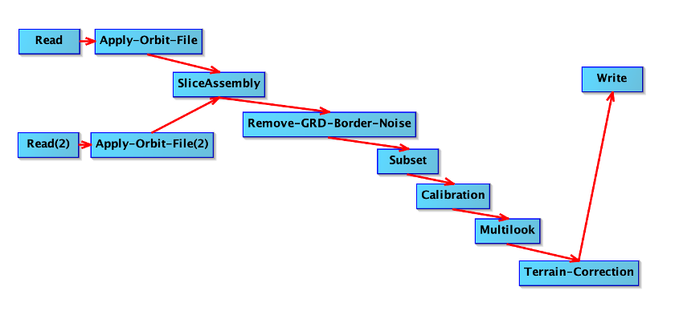
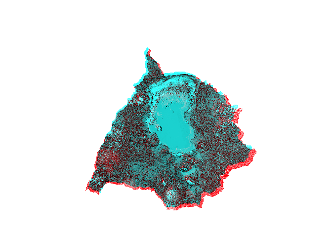
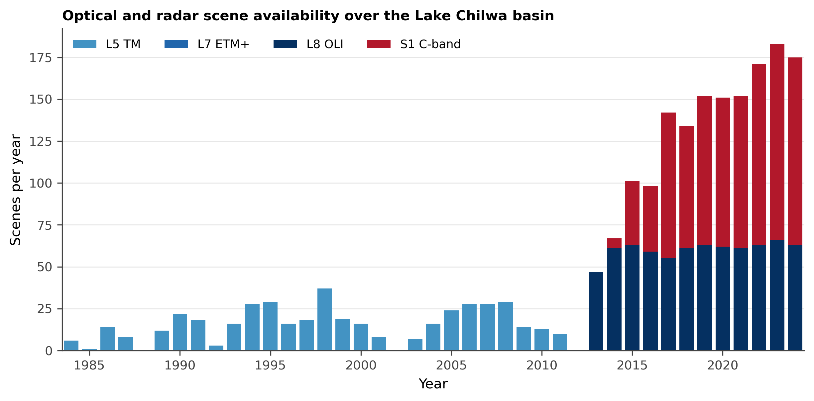
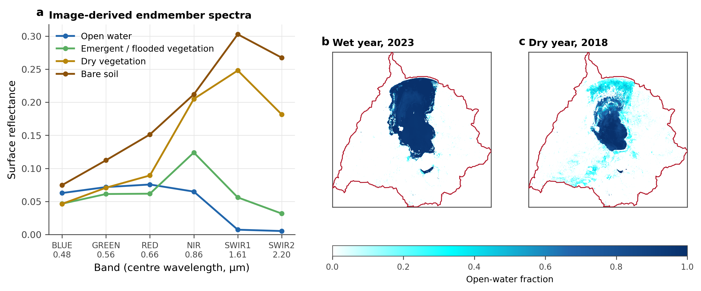

The study employs a socio-hydrological systems framework, a mixed-methods, two-stage approach that treats the lake and the society dependent on it as one coupled water-society system and integrates biophysical remote sensing with social research methods. The framework targets the perspectives of marginalised groups, particularly migrant fishers, who form a principal economic segment of the Lake Chilwa system yet are overlooked in conventional management frameworks.
Data collection occurred between September 2012 and March 2014 across lakeshore villages in Zomba, Phalombe, and Machinga districts within the Lake Chilwa Ramsar zones. Study site boundaries were defined through participatory mapping workshops with multi-stakeholder groups and Department of Fisheries officers. The fisheries governance structure within which fieldwork operated, comprising six Fisheries Associations aligned to Traditional Authorities and 53 Beach Village Committees aligned to Group Village Headmen, is described by Wilson (2009) in the Lake Chilwa and Mpoto Lagoon Fisheries Management Plan.
Qualitative data. Qualitative data collection comprised four methods. Key informant interviews (n=45) were semi-structured conversations with village leaders, fishing camp chairmen, Beach Village Committee (BVC) members, Department of Fisheries officers, and long-term residents, focused on historical lake dynamics, fishing regulations, and seasonal migration. Focus group discussions (n=18) convened separate sessions with migrant seine-net fishers, resident gill-net fishers, women fish processors, boat owners, bicycle traders, and zimbowera cooperative leaders to capture competing perspectives on resource access, livelihood strategies, and enforcement disputes. The research was based principally at Kachulu, the fishery’s busiest port on the western shore, with extended visits to fishing camps at Napali, Andere, Chambwalu, Lingoni, and Manda Manjeza in the lake interior and along the northern shore in Machinga district. Participatory rural appraisals employed seasonal calendars, resource mapping, and historical timelines to document collective knowledge of lake dynamics and fishery management. Extended participatory observation in fishing camps and zimbowera neighbourhoods documented daily practices, operational logistics, social networks, and adaptive strategies during different hydrological phases (Murphy, 2014).
Geographic data. Geographic data collection used differential GPS receivers to record landscape structure and lakeshore dynamics during field visits. Participatory workshops enabled community identification of fishing infrastructure, including permanent and seasonal camps, landing sites, processing areas, and the canal systems (such as Mapila Canal, approximately 10 to 15 km depending on lake levels) through which fishers access otherwise inaccessible interior fishing grounds. Ecological zones including wetland boundaries, vegetation transitions, and spawning areas were mapped alongside cultural landscapes such as sacred fishing sites on Chisi Island (Kalanda-Sabola et al., 2007), traditional fishing territories, and conflict zones between district jurisdictions. Seasonal patterns including water level indicators, migration routes from Machinga to Zomba and Phalombe districts, and market network locations were recorded. Community knowledge was integrated with remote sensing through iterative validation workshops where preliminary satellite-derived maps were ground-truthed against local observations. This process revealed discrepancies between technical classifications and actual resource use patterns, leading to refined mapping approaches.
Reference data. In-situ reference data were collected during the ethnographic fieldwork between September 2012 and March 2014. Differential GPS receivers recorded landscape features, water boundaries, and vegetation transitions during field visits across the three study districts. A total of 45 key informant sites and 18 focus group locations were georeferenced, along with 23 fishing camps (permanent and seasonal), landing sites, processing areas, and ecological transition zones identified through participatory mapping workshops.
GPS points were imported into a GIS environment and used to generate training and validation polygons through visual interpretation of high-resolution Google Earth imagery cross-referenced with field photographs and community annotations. Polygons were sorted by size and alternately assigned to training (approximately 50%) and testing (approximately 50%) groups to ensure independent validation samples with balanced representation of small and large features, following the protocol of Mahdianpari et al. (2019). Community validation during iterative feedback workshops identified spectrally ambiguous landscape units, such as seasonal versus permanent wetlands and distinct fishing zones, that required field verification to classify correctly.
Field data collection summary:
Component
n
Description
Key informant interviews
45
Village leaders, camp chairmen, BVC members, Fisheries officers
The supervised classification rests on a ground-truth set built from field evidence, and the character of that evidence determines what the classifier can learn. During fieldwork we assembled an archive of 245 photographs documenting surface cover at visited sites: open water, flooded Typha marsh, dry vegetation, exposed lakebed, and the fishing infrastructure of camps and landing sites. Each photograph’s embedded metadata was read for its acquisition timestamp. Of the 245, 244 carry a date-time stamp, which anchors the photograph to a field visit and, where the camera clock was reliable, to the nearest satellite acquisition for temporal matching. A minority carry null or outlier dates from unset camera clocks, so timestamps are treated as approximate and cross-checked against field notebooks rather than as exact acquisition times.
The photographs do not themselves carry position: none of the 245 contain extractable latitude and longitude in their metadata. Location was supplied instead by the differential GPS survey and the participatory-mapping workshops described above, which recorded the coordinates of landscape features, water and vegetation boundaries, fishing camps, and ecological transition zones. Each ground-truth point therefore combines three elements: a coordinate from the survey-grade GPS or the participatory record, a cover-class label assigned from the photographic and field evidence at that location, and a date from the associated photograph or field note. This triangulation is the standard response where geotagged imagery is unavailable; it preserves the positional accuracy of the differential GPS while using the photographs for what they alone provide, an unambiguous visual identification of the surface at a known place and time. The participatory record adds what neither the photograph nor the coordinate encodes: the local identity of a place, its seasonal status, and the distinction between spectrally similar but functionally different units such as permanent and seasonal wetland.
The labelled points were compiled into a single georeferenced ground-truth set spanning the four cover classes and split into independent training and validation subsets. They enter the classification at three points: they screen the candidate features for separability (Section 2.2.F), they train the random forest by supplying the labelled spectra sampled from the feature image at each point (Section 2.2.G), and, as the held-out subset, they drive the accuracy assessment (Section 2.2.H). Iterative community-validation workshops reviewed the labelled points and reclassified those the classifier had misjudged, so the ground-truth set encodes local judgement alongside spectral evidence. The workflow below reads the photograph metadata, joins it to the surveyed coordinates and class labels, and writes the ground-truth point set the classifier consumes.
View code
# Training points drawn from ESA WorldCover (public, 10 m), remapped to the four# study classes and split 70/30, standing in for the field ground-truth points# (05.scripts/build_ground_truth_points.R -> 03.outputs/SHP/ground_truth_points.shp)# until those are compiled.# This cell runs before aoi-clip, so build aoi_ee here if absent.if(!exists("aoi_sf")){aoi_sf<-sf::st_transform(sf::read_sf(here::here("03.outputs", "SHP", "chilwa_basin.shp")), 4326)}if(!exists("aoi_ee")){aoi_ee<-rgee::sf_as_ee(sf::st_geometry(aoi_sf))}wc<-ee$ImageCollection("ESA/WorldCover/v200")$first()$clip(aoi_ee)# 80 water -> 1; 90 herbaceous wetland -> 2; 10/20/30/40 tree/shrub/grass/crop -> 3# dry vegetation; 60 bare/sparse -> 4. Built (50) and other classes are masked out.gt_class<-wc$select("Map")$remap(c(80L, 90L, 10L, 20L, 30L, 40L, 60L),c(1L, 2L, 3L, 3L, 3L, 3L, 4L))$rename("class")gt_points<-gt_class$stratifiedSample( numPoints =100L, classBand ="class", region =aoi_ee, scale =30L, seed =42L, geometries =TRUE)$randomColumn("rnd", seed =42L)gt_train_ee<-gt_points$filter(ee$Filter$lt("rnd", 0.7))gt_valid_ee<-gt_points$filter(ee$Filter$gte("rnd", 0.7))print(paste("Ground-truth points:", gt_points$size()$getInfo()))
2.2 Remote Sensing Framework
The remote sensing workflow integrates multi-temporal SAR backscatter analysis with optical spectral indices to map surface water extent variability. Its design priority is the detection of water beneath emergent vegetation, following the primary objective of Section 1.6, and each element is chosen for what it contributes to that class rather than to open water, which any of the sensors resolves. The elements are not alternatives to be ranked against one another but components of one model, and four choices follow from the priority. An ALOS PALSAR L-band layer in HH and HV is carried alongside the Sentinel-1 C-band series, because vertically polarised C-band does not reliably reach the water surface beneath vegetation (Adeli et al., 2020). Cover fractions are estimated at sub-pixel scale by endmember mixture analysis and enter the model as continuous predictors, because the water-and-vegetation mixture falls below the 30 m pixel and hard assignment discards it. Training labels come from the participatory and field record of Section 2.1.1 rather than from image interpretation, because inundation beneath the vegetation is a state that an interpreter cannot read from imagery at any resolution. And the flooded-vegetation class is retained through every stage of the feature screen and the classification instead of being masked out to protect the accuracy figures (Slagter et al., 2020). The clip boundary for all raster and vector queries is the self-derived basin polygon of Section 1.4, delineated by flow routing over a conditioned elevation model (Section 2.2.A), not a public basin product. The temporal window extends as far back as Landsat data quality permits, driven by the need to capture multiple recession events that recur at approximately 15 to 20-year intervals.
The workflow runs within Google Earth Engine, which hosts the full multi-sensor archive and applies radiometric calibration and terrain correction on demand, so no scene is downloaded or processed locally (Gorelick et al., 2017). Three data streams are developed in parallel and then combined. The radar stream (Section 2.2.B) builds a monthly Sentinel-1 C-band backscatter and water-mask series from the Ground Range Detected archive, and adds an ALOS PALSAR L-band layer that reaches beneath the Typha stand where C-band cannot. The Landsat stream (Sections 2.2.C to 2.2.E) harmonises the Thematic Mapper and Operational Land Imager records into a single Collection 2 series, computes the five water indices, and resolves sub-pixel cover through spectral mixture analysis, with a coarse-resolution MODIS series carrying the one year neither sensor covers. An independent terrain stream (Section 2.2.A) routes flow across the basin floor to ground the drainage-structure interpretation. The modelling operations that carry these series into the analysis, the feature selection, supervised classification, and accuracy assessment of Sections 2.2.F to 2.2.H, produce the inundation record that, joined to the participatory data, forms the empirical basis for the coupled socio-hydrological model set out in Section 4.6. Collection identifiers, filters, and parameters are given in full in the code that accompanies each subsection, so the series can be regenerated end to end
The three streams do not share a common window, and the gaps between them constrain what can be compared (Table 1). Landsat yields 37 annual composites across 1984 to 2024 but none for 2012: Thematic Mapper imaging over this basin ends on 18 October 2011 and the Operational Land Imager opens in 2013. The Enhanced Thematic Mapper Plus spans the interval but is excluded on measured grounds rather than reputation, since its scan-line-corrector-off scenes lose 43 to 48 per cent of their pixels inside the basin, which sits toward the swath edge, and the gaps recur in the same geometry on every pass of a given path, so the loss is a directional bias across the lake margin rather than noise that compositing averages away. Sentinel-1 begins in 2015. The L-band record divides at the loss of ALOS-1 in May 2011 and the launch of ALOS-2 in May 2014, so no PALSAR mosaic covers 2011 to 2014. One radar record does reach into the fieldwork window: Envisat ASAR acquired until contact was lost on 8 April 2012, and its alternating-polarisation mode carries the horizontal transmit that resolves flooded from non-flooded vegetation more reliably than the vertical transmit of Sentinel-1 (Mahdianpari et al., 2020).
The consequence is specific and awkward: the field evidence falls almost wholly in 2012, inside the recession the study targets but outside the optical record. The field record is the study’s reason for existing, since fisher observation supplies labels for water beneath vegetation that no sensor and no interpreter can produce, so the task is to build a 2012 surface those labels can validate rather than to weaken what the labels are asked to do. We construct that surface rather than assume it. A coarse-resolution MODIS series spans 2012 continuously and carries the recession signal at eight-day steps; the 2011 Thematic Mapper and 2013 Operational Land Imager composites that flank the fieldwork supply the 30 m spatial structure; and the relation between the two, fitted across every year in which both sensors observe the basin, transfers that structure onto the 2012 MODIS signal. The ground-truth points then validate the reconstructed year directly, and the reconstruction is itself reported with the uncertainty it carries. Each step is described in turn below.
Data stream
Coverage
Gaps
Landsat 5 and 8, harmonised
1984 to 2024, 37 annual composites
1985, 1988, 2002, and 2012 absent; Landsat 7 excluded for SLC-off loss
MODIS surface reflectance
2000 to 2024, 8-day composites
Bridges 2012 only; 500 m grid cannot resolve the vegetated class
Sentinel-1 C-band
2015 to 2024, monthly composites
2016 absent; 2014 scenes too few to composite
ALOS PALSAR L-band
2007 to 2010, 2015 to 2024
2011 to 2014 absent between the two missions
Field photographs
2011 to 2014, 244 frames
219 fall in February to June 2012; 21 carry unusable camera-clock defaults
Participatory and interview record
September 2012 to March 2014
Continuous
Climate reanalysis and satellite
1984 to 2024, 492 monthly steps
Continuous; TerraClimate and SPEI end December 2024
Table 1: Temporal coverage of each data stream, with the gaps that constrain cross-sensor comparison. The absence of Landsat in 2012 and of L-band between 2011 and 2014 leaves the 2012 recession observable at 30 m only through the adjacent years, and continuously only through MODIS and the participatory record.
2.2.1 Climatic & Hydrological Contexts
Lake Chilwa is endorheic, so water leaves the basin only by evaporation and seepage, and the balance between rainfall and atmospheric demand sets the level the lake can hold. We assembled a basin-mean climate record over the same window as the satellite series, 1984 to 2024, drawing on three products so that no single reanalysis or satellite estimate carries it alone: CHIRPS pentad precipitation, which blends station observations across Africa; TerraClimate monthly precipitation, potential evapotranspiration, and air temperature; and ERA5-Land monthly precipitation and two-metre air temperature. Drought state comes from the standardised precipitation-evapotranspiration index at a twelve-month accumulation (Vicente-Serrano et al., 2010), chosen over the more common standardised precipitation index because the evaporative term is not optional in a closed basin.
Precipitation averages 1,112 mm a year against potential evapotranspiration of 1,347 mm, a mean deficit of 235 mm, and the deficit is the normal state: rainfall exceeded atmospheric demand in only seven of the forty-one years. Rainfall is the variable term, ranging from 659 mm in 1992 to 1,444 mm in 1997 with a coefficient of variation of 0.17, while demand is nearly fixed, its standard deviation 45 mm against a mean of 1,347 mm. Mean annual air temperature is 22.4 °C and rises at 0.19 °C per decade across the record, from 21.6 °C in 1985 to 23.3 °C in 2024, lifting the evaporative term any refill must overcome.
The drought index dates the dry periods but does not predict the lake. SPEI-12 falls below -1.5 in 1992, 1994, 1995, 2005, and 2006, and two of those years, 1992 and 1995, sit among the five lowest in sub-pixel open water. The extremes contradict, however. The lowest open-water year of the record, 2003, was climatically unremarkable at 1,250 mm of rainfall, and the highest, 2024, was dry at 859 mm, following 2023, one of only three years since 2005 in which precipitation exceeded atmospheric demand. Across the record annual rainfall explains little of the annual variation in open water, the lagged cross-correlation peaking at r = 0.28 at one year over thirty-two paired years. The lake integrates its inputs over intervals the annual composite does not resolve, which is a reason to measure inundation from imagery rather than infer it from rainfall.
View code
# Basin-mean monthly climate, 1984 to 2024, over the self-derived basin polygon.# Run once; the full script is 05.scripts/extract_climate_timeseries.R, which# writes 03.outputs/CSV/climate_monthly.csv and climate_annual.csv.start<-ee$Date$fromYMD(1984L, 1L, 1L)end<-ee$Date$fromYMD(2025L, 1L, 1L)months<-ee$List$sequence(0, 41L*12L-1L)# reduceRegion at each product's native grid; a coarser scale would alias.basin_mean<-function(img, scale, date_str){v<-img$reduceRegion(ee$Reducer$mean(), aoi_ee, scale, maxPixels =1e9)ee$Feature(NULL, v)$set("date", date_str)}month_of<-function(img)ee$Date(img$get("system:time_start"))$format("YYYY-MM")# CHIRPS pentads summed to calendar months: six per month, none straddling.chirps<-ee$ImageCollection("UCSB-CHG/CHIRPS/PENTAD")$select("precipitation")chirps_fc<-ee$FeatureCollection(months$map(ee_utils_pyfunc(function(m){s<-start$advance(m, "month")basin_mean(chirps$filterDate(s, s$advance(1, "month"))$sum()$rename("pr_chirps"),5566, s$format("YYYY-MM"))})))# TerraClimate scale factors: pet, tmmx and tmmn are 0.1; pdsi is 0.01.tc_fc<-ee$ImageCollection("IDAHO_EPSCOR/TERRACLIMATE")$filterDate(start, end)$map(ee_utils_pyfunc(function(img){img<-ee$Image(img)b<-img$select("pr")$rename("pr_terraclim")$addBands(img$select("pet")$multiply(0.1)$rename("pet_terraclim"))$addBands(img$select("tmmx")$multiply(0.1)$rename("tmax_terraclim"))$addBands(img$select("tmmn")$multiply(0.1)$rename("tmin_terraclim"))basin_mean(b, 4638, month_of(img))}))# ERA5-Land: precipitation in metres, air temperature in kelvin.era_fc<-ee$ImageCollection("ECMWF/ERA5_LAND/MONTHLY_AGGR")$filterDate(start, end)$map(ee_utils_pyfunc(function(img){img<-ee$Image(img)b<-img$select("total_precipitation_sum")$multiply(1000)$rename("pr_era5")$addBands(img$select("temperature_2m")$subtract(273.15)$rename("tmean_era5"))basin_mean(b, 11132, month_of(img))}))# SPEI at twelve months: the wet or dry state of the preceding hydrological year.spei_fc<-ee$ImageCollection("CSIC/SPEI/2_11")$select("SPEI_12_month")$filterDate(start, end)$map(ee_utils_pyfunc(function(img){img<-ee$Image(img)basin_mean(img$rename("spei12"), 55660, month_of(img))}))
View code
climate_annual<-read.csv(here::here("03.outputs", "CSV", "climate_annual.csv"))theme_clim<-ggplot2::theme_minimal(base_size =9)+ggplot2::theme(panel.grid.minor =ggplot2::element_blank(), plot.title =ggplot2::element_text(face ="bold", size =9), legend.position ="bottom", legend.title =ggplot2::element_blank(), legend.key.height =grid::unit(3, "mm"))wet_dry<-c(`TRUE` ="#4C72B0", `FALSE` ="#C44E52")p_pr<-climate_annual|>dplyr::select(year, CHIRPS =pr_chirps, TerraClimate =pr_terraclim, `ERA5-Land` =pr_era5)|>tidyr::pivot_longer(-year)|>ggplot2::ggplot(ggplot2::aes(year, value, colour =name))+ggplot2::geom_line(linewidth =.4, alpha =.8)+ggplot2::geom_line(data =climate_annual, ggplot2::aes(year, pr_ensemble), inherit.aes =FALSE, colour ="black", linewidth =.8)+ggplot2::scale_colour_manual(values =c("#4C72B0", "#DD8452", "#55A868"))+ggplot2::labs(title ="(a) Annual precipitation, three products and their mean", x =NULL, y ="mm")+theme_climp_bal<-ggplot2::ggplot(climate_annual, ggplot2::aes(year, p_minus_pet))+ggplot2::geom_col(ggplot2::aes(fill =p_minus_pet>0), width =.8)+ggplot2::scale_fill_manual(values =wet_dry, guide ="none")+ggplot2::geom_hline(yintercept =0, linewidth =.3)+ggplot2::labs(title ="(b) Climatic water balance, precipitation minus PET", x =NULL, y ="mm")+theme_climp_tmp<-ggplot2::ggplot(climate_annual, ggplot2::aes(year, tmean_ensemble))+ggplot2::geom_line(colour ="#C44E52", linewidth =.6)+ggplot2::geom_smooth(method ="lm", formula =y~x, se =FALSE, colour ="grey40", linewidth =.4, linetype =2)+ggplot2::labs(title ="(c) Mean annual air temperature", x =NULL, y ="°C")+theme_climp_spei<-climate_annual[!is.na(climate_annual$spei12_oct), ]|>ggplot2::ggplot(ggplot2::aes(year, spei12_oct))+ggplot2::geom_col(ggplot2::aes(fill =spei12_oct>0), width =.8)+ggplot2::scale_fill_manual(values =wet_dry, guide ="none")+ggplot2::geom_hline(yintercept =c(-1.5, 1.5), linetype =3, linewidth =.3)+ggplot2::labs(title ="(d) SPEI-12 at October, wet and dry periods", x ="Year", y ="SPEI")+theme_climpatchwork::wrap_plots(p_pr, p_bal, p_tmp, p_spei, ncol =1)
Climatic setting of the Lake Chilwa basin, 1984 to 2024, over the same window as the optical and radar record. (a) Annual precipitation from CHIRPS, TerraClimate, and ERA5-Land, with their mean in black. (b) Climatic water balance, precipitation minus potential evapotranspiration; the deficit is the normal state and only seven years are positive. (c) Mean annual air temperature, rising at 0.19 °C per decade. (d) Twelve-month SPEI at October, with the conventional thresholds at plus and minus 1.5.
Import AOI Data
The workflow begins with a point location inside the waterbody of interest, from which the surrounding basin is scoped. The analysis boundary itself is the self-derived basin polygon of Section 1.4.
Locator map: site area at 1:4,000,000 and 1:150,000 scales
The self-derived basin polygon of Section 1.4 provides the clip boundary for all Earth Engine queries.
2.2.2 Flow-Routing Analysis
The basin boundary and drainage network are derived from the terrain, not inherited from a public product. Google Earth Engine has no native flow-routing tool, so the delineation is performed locally in R. On Lake Chilwa’s flat endorheic floor, where the lake and wetland complex hold an average maximum depth of 2.95 m across some 2,310 km² within a catchment of 8,752 km² (Section 1.4), the decisive step is hydrological conditioning of the elevation model: without it, closed depressions and flat cells sever the flow paths on which the drainage-structure argument of Section 3.3 depends.
We conditioned the elevation model by least-cost depression breaching alone (Lindsay, 2016), carving minimal-descent paths through spurious barriers rather than filling depressions, which on a near-flat basin floor would erase the very gradients the routing depends on. Flow was then routed by the D-infinity method (Tarboton, 1997), whose continuous angular partitioning represents dispersal across low-relief terrain more faithfully than the eight discrete directions of D8; where fuller flow dispersion is wanted, a multiple-flow-direction variant (Freeman, 1991; Quinn, 1991) is the defensible alternative. Routing was computed twice for algorithmic consensus: once in WhiteboxTools (wbt_d_inf_pointer, wbt_d_inf_flow_accumulation) and once in the flowdem package (dirs and accum, mode dinf). From the D-infinity flow accumulation we extracted the stream network (wbt_extract_streams), ordered it by the Strahler scheme (wbt_strahler_stream_order), and delineated the basin and its sub-catchments, the polygons that serve as the analysis boundary (03.outputs/SHP/chilwa_basin.shp, chilwa_subasins.shp). The full workflow, including the depression-breaching and DEM-resolution comparisons, is documented in 05.scripts/watershed-algorithms.qmd and its published mirror.
View code
# Terrain derivation, 1 arc-second SRTM, run from this notebook.## The elevation model is SRTM 1 arc-second (USGS/SRTMGL1_003), ~30 m at this# latitude. The 15 arc-second SRTM15Plus product used in earlier drafts is a# global OCEAN BATHYMETRY dataset (Tozer et al., 2019) that carries land at# ~450 m; on a basin whose floor relief is a few metres it cannot hold the# gradients D-infinity routing needs, and it is retired here.## Conditioning is least-cost depression breaching only, never filling# (Lindsay, 2016), because filling flattens the basin floor. Routing is# D-infinity (Tarboton, 1997). Earth Engine has no breaching, flow-accumulation# or D-infinity operator, so conditioning and routing run locally in# WhiteboxTools while the elevation model itself is pulled from Earth Engine.## Each step is skipped when its output already exists, so a re-render costs# nothing; delete the files in 03.outputs/DEM/extracted to force a rebuild.dem_extract_dir<-here::here("03.outputs", "DEM", "extracted")dir.create(dem_extract_dir, recursive =TRUE, showWarnings =FALSE)f_ll<-file.path(dem_extract_dir, "srtm30m_chilwa.tif")# 4326 sourcef_utm<-file.path(dem_extract_dir, "srtm30m_utm.tif")# 32736, 30 mf_brc<-file.path(dem_extract_dir, "srtm30m_breached.tif")f_ptr<-file.path(dem_extract_dir, "dinf30m_FlowDirectionang.tif")f_sca<-file.path(dem_extract_dir, "dinf30m_areasca.tif")whitebox::wbt_init()terra::terraOptions(memfrac =0.5, progress =0)# 1. Elevation model, tiled out of Earth Engine to stay inside the download cap.if(!file.exists(f_ll)){bb<-as.numeric(sf::st_bbox(aoi_sf)); pad<-0.05xs<-seq(bb[1]-pad, bb[3]+pad, length.out =4)ys<-seq(bb[2]-pad, bb[4]+pad, length.out =4)srtm<-ee$Image("USGS/SRTMGL1_003")$select("elevation")tiles<-character(0)for(iin1:3)for(jin1:3){g<-ee$Geometry$Rectangle(list(xs[i], ys[j], xs[i+1], ys[j+1]))u<-srtm$getDownloadURL(list(scale =30, crs ="EPSG:4326", region =g, format ="GEO_TIFF"))tf<-tempfile(fileext =".tif"); download.file(u, tf, quiet =TRUE, mode ="wb")tiles<-c(tiles, tf)}terra::writeRaster(do.call(terra::merge, lapply(tiles, terra::rast)),f_ll, overwrite =TRUE, datatype ="INT2S", gdal =c("COMPRESS=DEFLATE", "TILED=YES"))}# 2. Project to metres so slope, distance and contributing area are physical.if(!file.exists(f_utm)){terra::writeRaster(terra::project(terra::rast(f_ll), "EPSG:32736", res =30, method ="bilinear"),f_utm, overwrite =TRUE, gdal =c("COMPRESS=DEFLATE", "TILED=YES"))}# 3. Breaching only, fill = FALSE.if(!file.exists(f_brc)){whitebox::wbt_breach_depressions_least_cost( dem =f_utm, output =f_brc, dist =200, min_dist =TRUE, flat_increment =0.001, fill =FALSE)}# 4. D-infinity pointer and specific contributing area.if(!file.exists(f_ptr))whitebox::wbt_d_inf_pointer(dem =f_brc, output =f_ptr)if(!file.exists(f_sca))whitebox::wbt_d_inf_flow_accumulation(input =f_brc, output =f_sca, out_type ="Specific Contributing Area")# 5. Geographic copies for the map chunks, which crop in degrees.for(prinlist(c(f_utm, "srtm30m_ll.tif", "bilinear"),c(f_ptr, "dinf30m_FlowDirectionang_ll.tif", "near"),c(f_sca, "dinf30m_areasca_ll.tif", "bilinear"))){fo<-file.path(dem_extract_dir, pr[2])if(!file.exists(fo)&&file.exists(pr[1]))terra::writeRaster(terra::project(terra::rast(pr[1]), "EPSG:4326", method =pr[3]),fo, overwrite =TRUE, gdal =c("COMPRESS=DEFLATE"))}# Resolution actually in use, printed so the record cannot drift again.data.frame( grid =c("elevation", "D-inf direction", "D-inf contributing area"), file =c("srtm30m_ll.tif", "dinf30m_FlowDirectionang_ll.tif","dinf30m_areasca_ll.tif"), res_m =vapply(c("srtm30m_ll.tif", "dinf30m_FlowDirectionang_ll.tif","dinf30m_areasca_ll.tif"),function(f){fp<-file.path(dem_extract_dir, f)if(file.exists(fp))round(terra::res(terra::rast(fp))[1]*111320)elseNA_real_}, numeric(1)))
View code
# The SRTM input and the D-infinity grids from the breach-conditioned derivation.# Routing is computed in EPSG:32736 so slopes and areas are metric; the grids# are carried here in EPSG:4326 to match the AOI used by the map chunks below.srtm30m<-terra::rast(file.path(dem_extract_dir, "srtm30m_ll.tif"))dinf_dir<-terra::rast(file.path(dem_extract_dir, "dinf30m_FlowDirectionang_ll.tif"))dinf_area<-terra::rast(file.path(dem_extract_dir, "dinf30m_areasca_ll.tif"))print(srtm30m)
Contributing area spans several orders of magnitude, so the D-infinity accumulation is mapped on a log scale, cropped to the basin and a surrounding buffer for comparison against the GEE-derived relief map above.
terra::plot(dinf_area_log, main ="D-infinity specific catchment area (log10)", col =hcl.colors(50, "Blues 3"))terra::plot(aoi_vect, add =TRUE, border ="red", lwd =2)terra::plot(dinf_dir_crop, main ="D-infinity flow direction (radians, 0 to 2π)", col =hcl.colors(50, "Roma"))terra::plot(aoi_vect, add =TRUE, border ="red", lwd =2)
The D-infinity direction map resolves a fan of continuous flow angles across the basin floor, the behaviour continuous partitioning is designed for on flat, low-relief terrain, where a discrete single-direction scheme would force flow into eight compass-aligned bins and sever the gentle gradients that carry water across the terminal floor.
2.2.3 SAR Backscatter Processing
SAR processing exploits the sensitivity of C-band radar to backscatter differences between smooth water surfaces and rough terrestrial features. Calm water yields low backscatter (-20 to -30 dB) while vegetated areas exhibit higher returns from volume scattering and surface roughness interactions. Wet soils produce higher backscatter than dry soils due to their increased dielectric constant. VV polarisation provides greatest sensitivity to soil moisture; cross-polarisation (VH) differentiates woody from herbaceous vegetation (Tsyganskaya et al., 2018).
The Sentinel-1 configuration is therefore adequate for open water and weakest for the class this study targets. Sentinel-1 acquires in VV and VH only, and vertically polarised transmit “may not reach the water surface beneath the vegetation cover because of its vertical orientation” (Adeli et al., 2020), while horizontal transmit resolves flooded from non-flooded vegetation more reliably (Mahdianpari et al., 2020). Slagter et al. (2020) attribute their failure over vegetated wetland to exactly this configuration. We treat the C-band series accordingly, as the record of open-water extent and of intra-annual timing at 10 m and six to twelve day revisit, and we carry the ALOS PALSAR L-band layer of the same subsection as the evidence for water beneath the vegetation, accepting its coarser resolution and annual frequency as the price of the longer wavelength. Detection beneath vegetation is conditional rather than assured even at L-band, since double-bounce return saturates as standing biomass rises and fails again where the emergent stems are too small or too sparse to produce it (Tsyganskaya et al., 2018). For Typha domingensis, the dominant macrophyte of the Chilwa swamp, the stem geometry sits within the detectable range for C-, S-, and L-band alike, at roughly 1.6 cm diameter, 20 to 28 stems per square metre, and 1.8 to 2.2 m in height, though incidence angles shallower than 35 degrees carry higher uncertainty (Battaglia and Bourgeau-Chavez, 2025).
Sentinel-1 data were processed through a Google Earth Engine pipeline. GEE hosts the Copernicus Sentinel-1 Ground Range Detected archive already carried through the standard ESA preprocessing chain: precise orbit-file application, thermal and border noise removal, radiometric calibration to sigma-naught backscatter, and range-Doppler terrain correction (Gorelick et al., 2017). To this we add the corrections that make C-band defensible over the basin’s low-relief, vegetated margins: multi-temporal speckle suppression and angular-based radiometric slope correction, which normalises backscatter for local incidence angle and terrain (Vollrath et al., 2020). We filter the archive to Interferometric Wide Swath mode, VV and VH polarisations, and descending orbit, holding a single relative orbit where possible to keep the acquisition geometry constant across the time series. Dense multi-temporal stacking of this kind characterises wetland extent and vegetation more reliably than single dates (Slagter et al., 2020), and unsupervised modelling of the resulting Sentinel-1 time series can isolate change without labelled data (Di Martino et al., 2023).
GEE does not apply speckle filtering by default. We implement a focal mean approximation. For refined Lee Sigma filtering, export to SNAP. The focal approach is sufficient for time series compositing where multi-temporal averaging further suppresses speckle.
View code
apply_speckle_filter<-function(image){# Focal mean with 7x7 kernel (approximates boxcar filter)vv_filtered<-image$select("VV")$focal_mean(radius =3.5, kernelType ="square", units ="pixels")$rename("VV_filtered")vh_filtered<-image$select("VH")$focal_mean(radius =3.5, kernelType ="square", units ="pixels")$rename("VH_filtered")image$addBands(vv_filtered)$addBands(vh_filtered)$copyProperties(image, list("system:time_start"))}s1_filtered<-s1$map(apply_speckle_filter)
Backscatter Ratio Bands
VV/VH ratio and band difference help distinguish open water from flooded vegetation. Open water shows low VV and low VH. Flooded vegetation shows moderate VV but elevated VH due to double-bounce scattering.
View code
# Ratio (in dB domain, ratio = difference)add_ratio_bands<-function(image){vv<-image$select("VV_filtered")vh<-image$select("VH_filtered")ratio<-vv$subtract(vh)$rename("VV_VH_ratio")nd<-vv$subtract(vh)$divide(vv$add(vh))$rename("VV_VH_nd")image$addBands(ratio)$addBands(nd)$copyProperties(image, list("system:time_start"))}s1_processed<-s1_filtered$map(add_ratio_bands)
Water Detection Thresholding
Calm water surfaces yield low backscatter in both VV and VH channels, typically below -15 dB for VV. We use a percentile-based adaptive threshold: compute the VV distribution within the AOI on a reference scene and take the value that separates the lowest backscatter mode (water) from land. A fixed fallback of -15 dB is available if needed.
View code
# Reference scene for threshold calibrationsample_image<-ee$Image(s1_processed$first())$select("VV_filtered")# Compute percentile-based threshold within AOI# The 15th percentile of VV typically captures the water/land break# in scenes with substantial water coverage like Chilwapercentiles<-sample_image$reduceRegion( reducer =ee$Reducer$percentile(c(15L, 50L)), geometry =aoi_ee, scale =30L, maxPixels =as.integer(1e9))$getInfo()threshold_vv<-percentiles$VV_filtered_p15print(paste("Adaptive VV threshold (p15):", round(threshold_vv, 2), "dB"))print(paste("Median VV:", round(percentiles$VV_filtered_p50, 2), "dB"))# Use adaptive threshold; fall back to -15 dB if percentile is unreasonableif(is.null(threshold_vv)||threshold_vv>-10||threshold_vv<-25){threshold_vv<--15print("Using fixed threshold: -15 dB")}classify_water<-function(image){water<-image$select("VV_filtered")$lt(threshold_vv)$rename("water")image$addBands(water)$copyProperties(image, list("system:time_start"))}s1_water<-s1_processed$map(classify_water)
Monthly Composites
Aggregate to monthly composites to reduce data volume and suppress residual speckle through temporal averaging.
View code
# Build year-month pairs in the cloud before writing locallyyear_month_pairs<-expand.grid(year =2015L:2024L, month =1L:12L)composite_list<-lapply(seq_len(nrow(year_month_pairs)), function(i){y<-as.integer(year_month_pairs$year[i])m<-as.integer(year_month_pairs$month[i])start<-ee$Date$fromYMD(y, m, 1L)end<-start$advance(1L, "month")monthly<-s1_water$filterDate(start, end)n<-monthly$size()$getInfo()if(n==0L)return(NULL)monthly$mean()$set("system:time_start", start$millis())$set("year", y)$set("month", m)$set("n_scenes", n)})# Drop empty monthscomposite_list<-Filter(Negate(is.null), composite_list)s1_monthly<-ee$ImageCollection$fromImages(composite_list)print(paste("Monthly composites:", length(composite_list)))
Time Series Extraction
Extract mean backscatter and water fraction within the AOI for each monthly composite to build the SAR time series.
View code
extract_stats<-function(image){stats<-image$select(c("VV_filtered", "VH_filtered", "water"))$reduceRegion( reducer =ee$Reducer$mean(), geometry =aoi_ee, scale =200L, maxPixels =as.integer(1e9))ee$Feature(NULL, stats)$set("date", image$date()$format("YYYY-MM-dd"))$set("year", image$get("year"))$set("month", image$get("month"))$set("n_scenes", image$get("n_scenes"))}s1_ts<-s1_monthly$map(extract_stats)s1_ts_info<-s1_ts$getInfo()# Convert to data frames1_df<-do.call(rbind, lapply(s1_ts_info$features, function(f){data.frame( date =f$properties$date, year =f$properties$year, month =f$properties$month, n_scenes =f$properties$n_scenes, VV_mean =f$properties$VV_filtered, VH_mean =f$properties$VH_filtered, water_frac =f$properties$water, stringsAsFactors =FALSE)}))s1_df$date<-as.Date(s1_df$date)print(head(s1_df))
Multi-temporal gradient analysis, adapted from sea ice monitoring methodologies, enhanced detection of dynamic water boundaries through comparative analysis of seasonal backscatter patterns. This approach proved effective for identifying transitions between open water, flooded vegetation, and terrestrial surfaces, and for tracking the recession-refilling wavefront described in Section 3.3.
Maps of wet-season and dry-season composite side by side.
View code
# Compare months in wet and dry seasonswet<-s1_monthly$filter(ee$Filter$eq("month", 1L))$filter(ee$Filter$eq("year", 2020L))$first()dry<-s1_monthly$filter(ee$Filter$eq("month", 8L))$filter(ee$Filter$eq("year", 2020L))$first()vis_sar<-list(bands =list("VV_filtered"), min =-25, max =0,palette =c("black", "white"))vis_water<-list(bands =list("water"), min =0, max =1,palette =c("white", "blue"))wet_sar_url<-ee_tile_url(wet$clip(aoi_ee), vis_sar)dry_sar_url<-ee_tile_url(dry$clip(aoi_ee), vis_sar)wet_water_url<-ee_tile_url(wet$clip(aoi_ee), vis_water)dry_water_url<-ee_tile_url(dry$clip(aoi_ee), vis_water)tmap_mode("view")tm_shape(st_as_sf(aoi_sf))+tm_borders(col ="red", lwd =2)+tm_basemap("Esri.WorldImagery")+tm_tiles(wet_sar_url, group ="Wet VV (Jan 2020)")+tm_tiles(wet_water_url, group ="Wet water mask (Jan 2020)")+tm_scalebar(position =c("right", "bottom"))->map_wettm_shape(st_as_sf(aoi_sf))+tm_borders(col ="red", lwd =2)+tm_basemap("Esri.WorldImagery")+tm_tiles(dry_sar_url, group ="Dry VV (Aug 2020)")+tm_tiles(dry_water_url, group ="Dry water mask (Aug 2020)")+tm_scalebar(position =c("right", "bottom"))->map_drytmap_arrange(map_wet, map_dry, ncol =2)
Export SAR Series
View code
write.csv(s1_df, here::here("03.outputs", "s1_monthly_timeseries.csv"), row.names =FALSE)# To export a composite as GeoTIFF (uncomment and run as needed):# task <- ee$batch$Export$image$toDrive(# image = wet$select(c("VV_filtered", "VH_filtered", "water"))$clip(aoi_ee),# description = "S1_wet_2020_01",# folder = "GEE_exports",# region = aoi_ee,# scale = 10L,# maxPixels = as.integer(1e9)# )# task$start()
GEE Sentinel-1 GRD products arrive with radiometric calibration (sigma0) and Range-Doppler terrain correction already applied. The processing chain here adds speckle filtering (focal mean, 7x7), polarimetric ratio bands, adaptive VV water thresholding, and monthly compositing. For interferometric analysis or refined Lee Sigma filtering, export raw scenes to SNAP.


L-band & Flooded Vegetation
C-band cannot penetrate the dense Typha stand that defines the marsh interior, the one blind spot the optical and Sentinel-1 stacks share. L-band, at roughly 23 cm wavelength against C-band’s 5.6 cm, reaches through emergent vegetation and returns the double-bounce signal of standing water beneath it. We add the ALOS and ALOS-2 PALSAR L-band yearly mosaic (Shimada et al., 2014), the only historical spaceborne radar in the archive for this basin, available for 2007 to 2010 and 2015 to 2020. The mosaic is terrain-corrected and orthorectified; we convert the stored digital numbers to gamma-naught backscatter by the standard calibration, gamma0 (dB) = 10 log10(DN²) − 83.0, and derive the HH and HV channels and their difference. Flooded vegetation raises HH through double-bounce while open water stays low in both channels and dry vegetation scatters into HV, so the HH-minus-HV contrast isolates inundation beneath the vegetation that neither optical indices nor C-band resolve. The L-band HH and HV channels enter the 2020 feature stack alongside the optical and C-band features, and the per-year basin series probes how the beneath-vegetation signal tracks the recession cycle across the years the mosaic spans.
View code
# ALOS/ALOS-2 PALSAR L-band yearly mosaic. DN -> gamma0 dB (Shimada et al. 2014):# gamma0 = 10*log10(DN^2) - 83.0. HH double-bounce marks flooded vegetation.palsar_cal<-function(img){hh<-img$select("HH"); hv<-img$select("HV")hh_db<-hh$updateMask(hh$gt(0))$pow(2)$log10()$multiply(10)$subtract(83)$rename("L_HH")hv_db<-hv$updateMask(hv$gt(0))$pow(2)$log10()$multiply(10)$subtract(83)$rename("L_HV")diff<-hh_db$subtract(hv_db)$rename("L_HH_HV")img$addBands(hh_db)$addBands(hv_db)$addBands(diff)$copyProperties(img, list("system:time_start"))}# 2015-2020 epoch mosaic carries the 2020 layer used in the feature stack;# the older 2007-2010 mosaic extends the historical L-band record.palsar_epoch<-ee$ImageCollection("JAXA/ALOS/PALSAR/YEARLY/SAR_EPOCH")$filterBounds(aoi_ee)$map(palsar_cal)palsar_early<-ee$ImageCollection("JAXA/ALOS/PALSAR/YEARLY/SAR")$filterBounds(aoi_ee)$map(palsar_cal)palsar<-palsar_epoch$merge(palsar_early)# 2020 L-band layer for the 2020 feature stack (Sections 2.2.F and 2.2.G).palsar_2020<-palsar_epoch$filter(ee$Filter$calendarRange(2020L, 2020L, "year"))$first()$select(c("L_HH", "L_HV", "L_HH_HV"))$clip(aoi_ee)# Per-year basin-mean L-band backscatter across the years the mosaic spans.lband_stats<-function(img){s<-img$select(c("L_HH", "L_HV", "L_HH_HV"))$reduceRegion( reducer =ee$Reducer$mean(), geometry =aoi_ee, scale =30L, maxPixels =as.integer(1e9))ee$Feature(NULL, s)$set("year", ee$Date(img$get("system:time_start"))$get("year"))}lband_info<-palsar$map(lband_stats)$getInfo()lband_df<-do.call(rbind, lapply(lband_info$features, function(f)data.frame(year =f$properties$year, L_HH =f$properties$L_HH, L_HV =f$properties$L_HV, L_HH_HV =f$properties$L_HH_HV)))lband_df<-lband_df[order(lband_df$year), ]write.csv(lband_df, here::here("03.outputs", "palsar_lband_annual.csv"), row.names =FALSE)print(lband_df)
View code
# 2020 HH-HV double-bounce indicator: high where vegetation stands in water.vis_lband<-list(bands =list("L_HH_HV"), min =-2, max =8, palette =c("#2166ac", "#f7f7f7", "#b2182b"))lband_url<-ee_tile_url(palsar_2020, vis_lband)tmap_mode("view")tm_shape(st_as_sf(aoi_sf))+tm_borders(col ="red", lwd =2)+tm_basemap("Esri.WorldImagery")+tm_tiles(lband_url, group ="PALSAR HH-HV (2020)")+tm_scalebar(position =c("right", "bottom"))
2.2.4 Landsat Image Processing
Optical analysis used Analysis Ready Data products from Landsat Collection 2, accessed through Google Earth Engine, specifically Level-2 surface reflectance from the Thematic Mapper (L5-TM), Enhanced Thematic Mapper Plus (L7-ETM+), and Operational Land Imager (L8-OLI). Band names were harmonised to a common six-band schema (blue, green, red, NIR, SWIR1, SWIR2) across the three sensor families to enable consistent index computation. Because Collection 2 Level-2 products are already atmospherically corrected (LEDAPS for the Thematic Mapper and Enhanced Thematic Mapper Plus, LaSRC for the Operational Land Imager) and terrain-registered (L1TP), quality control centres not on re-deriving these corrections but on removing what they leave behind. Collection 2 scale factors were applied (reflectance = DN x 0.0000275 - 0.2), and dilated-cloud, cirrus, cloud, and cloud-shadow pixels were masked from the QA_PIXEL bitfield together with radiometrically saturated pixels flagged in QA_RADSAT. Scenes exceeding 30% cloud cover were excluded. Earlier sensors (Landsat 3 and 4) were evaluated but present gaps, cloud interference, sensor degradation, and archival quality issues that reduce usable coverage, particularly before 1984; the temporal window is constrained by these data quality limitations rather than by methodological choice. Annual median composites were generated for each index, forming the core multi-decadal time series for characterising recession-refilling cycles.
View code
l5_bands<-list(from =c("SR_B1","SR_B2","SR_B3","SR_B4","SR_B5","SR_B7"), to =c("blue","green","red","nir","swir1","swir2"))l7_bands<-l5_bandsl8_bands<-list(from =c("SR_B2","SR_B3","SR_B4","SR_B5","SR_B6","SR_B7"), to =c("blue","green","red","nir","swir1","swir2"))apply_scale<-function(image){optical<-image$select("SR_B.*")$multiply(0.0000275)$add(-0.2)image$addBands(optical, overwrite =TRUE)$copyProperties(image, list("system:time_start"))}# Cloud, shadow, and saturation QC. C2 L2 already# carries atmospheric (LEDAPS/LaSRC) and terrain (L1TP) correction, so this masks# what those leave: QA_PIXEL bit 1 dilated cloud, bit 2 cirrus, bit 3 cloud,# bit 4 cloud shadow; plus QA_RADSAT saturated pixels. Snow (bit 5) is rare here.mask_clouds<-function(image){qa<-image$select("QA_PIXEL")sat<-image$select("QA_RADSAT")cloud_bits<-bitwShiftL(1L, 1L)+bitwShiftL(1L, 2L)+bitwShiftL(1L, 3L)+bitwShiftL(1L, 4L)clean<-qa$bitwiseAnd(cloud_bits)$eq(0L)$And(sat$eq(0L))image$updateMask(clean)$copyProperties(image, list("system:time_start"))}harmonise<-function(image, from, to)image$select(from, to)$copyProperties(image, list("system:time_start"))l5_col<-ee$ImageCollection("LANDSAT/LT05/C02/T1_L2")$filterBounds(aoi_ee)$filter(ee$Filter$lt("CLOUD_COVER", 30))$map(mask_clouds)$map(apply_scale)$map(function(img)harmonise(img, l5_bands$from, l5_bands$to))l7_col<-ee$ImageCollection("LANDSAT/LE07/C02/T1_L2")$filterBounds(aoi_ee)$filter(ee$Filter$lt("CLOUD_COVER", 30))$map(mask_clouds)$map(apply_scale)$map(function(img)harmonise(img, l7_bands$from, l7_bands$to))l8_col<-ee$ImageCollection("LANDSAT/LC08/C02/T1_L2")$filterBounds(aoi_ee)$filter(ee$Filter$lt("CLOUD_COVER", 30))$map(mask_clouds)$map(apply_scale)$map(function(img)harmonise(img, l8_bands$from, l8_bands$to))landsat<-l5_col$merge(l8_col)$sort("system:time_start")# Landsat 7 excluded (SLC-off striping)n_landsat<-landsat$size()$getInfo()print(paste("Total harmonised Landsat scenes:", n_landsat))ls_dates<-landsat$reduceColumns(ee$Reducer$minMax(), list("system:time_start"))$getInfo()print(paste("First scene:", as.Date(as.POSIXct(ls_dates$min/1000, origin ="1970-01-01"))))print(paste("Last scene:", as.Date(as.POSIXct(ls_dates$max/1000, origin ="1970-01-01"))))
Data Availability
The usable temporal depth is set by data availability, not by choice of window. Wet-season cloud removes much of the optical record precisely when inundation peaks, so before compositing we audit how many scenes each sensor contributes over the basin per year, and how many survive the cloud screen. The audit quantifies the trade-off that fixes the analysis window: the Thematic Mapper record reaches 1984 with usable coverage and closes in October 2011, the Operational Land Imager continues it from 2013 to the present, and C-band radar begins only in late 2014. Landsat Multispectral Scanner scenes extend to 1972 but carry no shortwave-infrared band, so the SWIR-based indices central to this study cannot be computed from them; they are therefore excluded, and the optical window opens in 1984. Cloud metadata does not record scan-line-corrector loss, so a cloud-filtered scene count is not a measure of usability for the Enhanced Thematic Mapper Plus, and the exclusion of that sensor rests on the measured within-basin pixel loss reported above rather than on the audit below.
View code
# Scenes per sensor per year within the basin, before and after the cloud screen.# aggregate_histogram returns one dict per collection (2 getInfo calls each),# which is far cheaper than looping getInfo over years.year_counts<-function(id, cloud_max=NULL){col<-ee$ImageCollection(id)$filterBounds(aoi_ee)if(!is.null(cloud_max))col<-col$filter(ee$Filter$lt("CLOUD_COVER", cloud_max))col<-col$map(function(img)img$set("year", ee$Date(img$get("system:time_start"))$get("year")))h<-col$aggregate_histogram("year")$getInfo()if(length(h)==0L)return(data.frame(year =integer(), n =integer()))data.frame(year =as.integer(names(h)), n =as.integer(unlist(h)))}optical<-list("L5 TM"="LANDSAT/LT05/C02/T1_L2","L8 OLI"="LANDSAT/LC08/C02/T1_L2")avail<-do.call(rbind, lapply(names(optical), function(s){a<-year_counts(optical[[s]]); if(nrow(a)){a$sensor<-s; a$screen<-"all"}c<-year_counts(optical[[s]], 30); if(nrow(c)){c$sensor<-s; c$screen<-"cloud < 30%"}rbind(a, c)}))# Sentinel-1 C-band scene counts per year (IW, descending), for temporal context.s1_col<-ee$ImageCollection("COPERNICUS/S1_GRD")$filterBounds(aoi_ee)$filter(ee$Filter$eq("instrumentMode", "IW"))$filter(ee$Filter$eq("orbitProperties_pass", "DESCENDING"))$map(function(img)img$set("year", ee$Date(img$get("system:time_start"))$get("year")))s1_h<-s1_col$aggregate_histogram("year")$getInfo()s1_counts<-data.frame(year =as.integer(names(s1_h)), n =as.integer(unlist(s1_h)), sensor ="S1 C-band", screen ="all")avail_all<-rbind(avail, s1_counts)write.csv(avail_all, here::here("03.outputs", "sensor_availability_by_year.csv"), row.names =FALSE)print(avail_all[order(avail_all$sensor, avail_all$year), ])

Optical and radar scene availability over the Lake Chilwa basin, 1984 to 2024. Landsat carries the record from 1984; Sentinel-1 C-band adds dense coverage from 2015, lifting annual scene counts from roughly 15 in the Landsat-only era to about 145 in the last decade.
MODIS Gap-Filling
No Landsat scene covers 2012, so the year carrying both the recession and the fieldwork would otherwise be a hole in the record. We fill it with MODIS surface reflectance, whose eight-day 500 m composites (MOD09A1) and nadir-adjusted daily equivalent (MCD43A4) span the gap without interruption from 2000. The approach is established for exactly this purpose. Li et al. (2019) built an eight-day 500 m surface-water-fraction series from MCD43A4 across eighteen years explicitly because cloud leaves temporal gaps in the Landsat record that prevent accurate assessment of surface-water dynamics, and Landmann et al. (2010) mapped wetland classes across 360,000 km² of semi-arid West Africa from 250 m MODIS metrics, validating them against Landsat by areal proportion within each coarse cell.
The trade is explicit. MODIS restores continuity across the recession and dates its onset and depth to within eight days; at 500 m it cannot resolve the vegetated fraction at all, since one pixel spans the whole width of the Typha fringe in most places. Ticehurst et al. (2014) set the honest bounds on what a MODIS water product can claim, finding view angle a strong source of bias for small water bodies and recommending that very low water fractions be discarded to control commission error. The series is therefore used to date and rank the 2012 recession against the rest of the record, not to measure the quantity this paper is about. We compute MNDWI and WRI from it on the same definitions used for Landsat and report a coarse-resolution hydrograph, not a classification.
MODIS alone will not carry the ground truth, so we blend it to 30 m. Spatiotemporal fusion predicts fine-resolution reflectance at a target date from coarse imagery at that date and one or more clear Landsat and MODIS base pairs on other dates (Gao et al., 2006; Zhu et al., 2010), and it is established for inland water, where a comparison across 45 lakes found ESTARFM the most accurate of five algorithms (Xu et al., 2024). Heimhuber et al. (2018) applied it to this exact constraint, generating an eight-day series of 30 m floodplain inundation maps in the Murray-Darling. Here the base pairs are the 2011 Thematic Mapper and 2013 Operational Land Imager composites, which supply spatial structure, while the temporal signal comes from the 2012 MODIS series, which observed the recession as it happened. The reconstruction is validated at the field points, so its error is measured rather than assumed.
The coarse grid is also where the field record validates most defensibly, which inverts the usual objection to it. A ground-truth point carries positional as well as thematic uncertainty, and a 30 m pixel tolerates almost none: an error of one or two pixels moves a point across the water-vegetation boundary and charges the classifier with a mistake the surveyor made. The Chilwa fringe is forgiving at coarser grain because it is wide. Emergent vegetation occupies between five and thirteen per cent of the basin across the record, distributed around a shoreline of a few hundred kilometres, so the reed belt averages one to three kilometres in width. A 500 m cell placed in its interior is therefore pure in the large majority of cases, while the same location at 30 m sits in a mosaic of water, reed, and exposed bed that no field note can disambiguate. We consequently assess accuracy on both grids: at 30 m against the reconstruction, and at the 500 m MODIS grid, onto which the 2011 and 2013 classifications are aggregated as class fractions so that the coarse assessment is comparable across all three years. The 500 m product is MOD09A1 rather than the finer 250 m MOD09Q1, because only the former carries the green and shortwave-infrared pair that MNDWI requires; the 250 m product offers red and near-infrared alone.
Two limits are stated rather than managed away. Both blending algorithms reach their target date by assuming how reflectance changes between base dates, and abrupt change violates that assumption: Kim (2022), testing them against flood and wildfire, found that a model dispensing with those assumptions in favour of the coarse time series captured abrupt reflectance change where they did not. A lake crossing its recession threshold within weeks is that case, so the reconstruction is expected to be weakest at the moment it matters most, and the field points are what reveal by how much. The deeper limit is spectral rather than temporal. The 500 m signal driving the reconstruction cannot see water standing beneath the Typha, so the fused surface inherits an open-water bias by construction. That is not a defect to be hidden but the very asymmetry this study exists to measure: where fisher-labelled points record standing water and the reconstruction does not, the shortfall is an estimate of what open-water reconstruction misses, and it is reported as such.
View code
# MODIS bridges 2012, the one year Landsat 5 and Landsat 8 leave uncovered.# MOD09A1 is the 8-day 500 m surface reflectance composite; band 4 is green,# band 6 SWIR1, band 1 red, band 2 NIR, so MNDWI and WRI follow the Landsat# definitions exactly. Reported as an open-water hydrograph only: at 500 m the# vegetated fraction is not resolvable and no class map is produced.modis_indices<-function(img){g<-img$select("sur_refl_b04")$multiply(0.0001)r<-img$select("sur_refl_b01")$multiply(0.0001)n<-img$select("sur_refl_b02")$multiply(0.0001)s<-img$select("sur_refl_b06")$multiply(0.0001)mndwi<-g$subtract(s)$divide(g$add(s))$rename("MNDWI")wri<-g$add(r)$divide(n$add(s))$rename("WRI")img$addBands(mndwi)$addBands(wri)}modis_col<-ee$ImageCollection("MODIS/061/MOD09A1")$filterBounds(aoi_ee)$filterDate("2000-01-01", "2025-01-01")$map(modis_indices)# Basin open-water fraction per 8-day step, MNDWI > 0 following the Landsat rule.modis_water<-modis_col$map(function(img){w<-img$select("MNDWI")$gt(0)$rename("water")frac<-w$reduceRegion(reducer =ee$Reducer$mean(), geometry =aoi_ee, scale =500, maxPixels =1e9)$get("water")ee$Feature(NULL, list(date =img$date()$format("YYYY-MM-dd"), water_fraction =frac))})modis_ts<-ee_as_sf(ee$FeatureCollection(modis_water))write.csv(sf::st_drop_geometry(modis_ts),here::here("03.outputs", "CSV", "modis_water_fraction_8day.csv"), row.names =FALSE)
2.2.5 Spectral Water Indices
We evaluated five water-extraction indices, selected to span the range of spectral approaches available for inland water mapping and to test their relative performance under the specific conditions Lake Chilwa presents; the same family of indices was recently benchmarked for surface-water extraction with Sentinel-2 by Girma et al. (2025). Each index, its band algebra, and its expected behaviour in this setting are set out below.
Index
Formula
Lake Chilwa Application
NDWI
(McFeeters, 1996)
(Green - NIR) / (Green + NIR)
The original water index, sensitive to deep open water but prone to false negatives in turbid, shallow, or vegetated conditions because suspended sediment and vegetation raise NIR reflectance; the baseline against which the others are compared.
MNDWI
(Xu, 2006)
(Green - SWIR1) / (Green + SWIR1)
Substitutes SWIR for NIR, improving discrimination of water from built-up and bare-soil surfaces; the strongest single optical index for turbid water, though it fails beneath emergent vegetation and requires adaptive thresholding in saline systems.
AWEIsh
(Feyisa et al., 2014)
Blue + 2.5 x Green - 1.5 x (NIR + SWIR1) - 0.25 x SWIR2
A five-band combination optimised for shadow suppression and complex-landscape discrimination; outperforms simpler indices where topographic or shadow effects confound classification but offers no clear advantage in shallow vegetated wetlands.
WRI
(Shen and Li, 2010)
(Green + Red) / (NIR + SWIR1)
A ratio index that suppresses cloud and shadow noise effectively; competitive in bare-soil landscapes but vulnerable to inflation from suspended sediment in the red band, and untested in endorheic systems.
NDPI
(Lacaux et al., 2007)
(SWIR1 - Green) / (SWIR1 + Green)
Designed for temporary pond detection in semi-arid Africa using SPOT-5 data; the algebraic inverse of MNDWI, sensitive to the water-vegetation boundary where other indices fail, most appropriate for Lake Chilwa’s seasonal vegetated margins but weaker in deep or turbid water.
The multi-index approach tests each against SAR-derived water maps to quantify what optical sensors detect and what they miss across the basin’s full range of conditions.
ls_long<-ls_df%>%pivot_longer(cols =c(NDWI, MNDWI, AWEIsh, WRI, NDPI), names_to ="index", values_to ="value")ggplot(ls_long, aes(x =year, y =value, colour =index))+geom_line(linewidth =0.8)+geom_point(size =1.5)+geom_vline(xintercept =c(1995, 2012), linetype ="dashed", colour ="grey40", linewidth =0.5)+labs(title ="Lake Chilwa: Spectral Water Indices (1984-2024)", x ="Year", y ="Index value (basin mean)", colour ="Index")+theme_minimal()+theme(legend.position ="bottom")
To address threshold instability caused by dissolved salts, algal blooms, and variable turbidity in the endorheic system, an Otsu-style percentile method was applied to derive adaptive water/non-water thresholds, following Pekel et al. (2016). Basin-wide MNDWI percentiles for a 2020 dry-season composite illustrate the bimodal distribution exploited by the method.
Spectral mixture analysis enabled sub-pixel water fraction estimation, critical for monitoring gradual transitions between terrestrial and aquatic habitats. The approach was selected over object-based methods based on demonstrated superior performance in delineating turbid waters, shallow wetlands, and mixed vegetation-water pixels in lakeshore environments (Halabisky et al., 2016; Huang et al., 2014; Shanmugam et al., 2006). The spectral characteristics of Lake Chilwa, with its dense marshlands, shallow waters, extensive detritus, phytoplankton blooms, and shoreline shadowing, make sub-pixel estimation essential.
Sub-pixel estimation is the direct methodological response to the detection problem of Section 1.2. A reed stand holding water is not a pixel of water or a pixel of vegetation but a mixture of the two, and hard classification must assign it wholly to one or the other, discarding the quantity of interest. Unmixing returns the water and emergent-vegetation fractions separately, so the inundated footprint can be summed from both and its two components tracked against each other through the recession-refilling cycle. The cost of the approach is its dependence on the endmembers, since inaccurate endmember extraction biases every fraction (Yuan et al., 2025); we address this by deriving endmembers from the imagery itself, once per sensor era, rather than importing published reflectance values.
Endmember selection followed standard protocols, with training samples drawn from spectrally pure pixels identified through iterative refinement and community validation. The model uses four classes: open water (129 samples, purity threshold >95%), emergent (flooded) vegetation (117 samples, >85%), dry vegetation (69 samples, >90%), and bare soil or exposed lakebed (42 samples, >85%). The urban/built class carried in earlier drafts was dropped: lakeshore settlements and the zimbowera fishing camps are built of Typha grass and bamboo, are sub-pixel at 30 m resolution, and are spectrally collinear with soil and vegetation, so a built endmember cannot be reliably resolved. The four classes were selected against a spectral separability screen (Section 2.2.F), and a fifth substrate class distinguishing salt-crusted from sandy exposed lakebed is a candidate for addition where the imagery supports it.
View code
# Endmembers are image-derived from spectrally pure# pixels (per-class median spectrum), not hardcoded placeholders, mirroring# 05.scripts/sma_endmember_modelling.R (SCHEME_4). Hardcoded reflectances that# do not match the scene bias every fraction and make the SMA irreproducible.# Endmembers are derived once per sensor era. A single set taken from a Landsat# 8 composite transfers poorly to Landsat 5: applied across the whole record it# raised Landsat 5 era open water by about 300 km2 against 185 km2 for the# Landsat 8 era, enough to erase the 1995 desiccation that Njaya et al. (2011)# document. Each era therefore supplies its own reference composite, a dry-season# median, and its own pure-pixel spectra.dry_season<-ee$Filter$calendarRange(6L, 10L, "month")ref_l8<-ref_scene# 2020 dry season, Landsat 8ref_l5<-landsat_idx$filterDate("2005-01-01", "2011-12-31")$filter(dry_season)$median()$clip(aoi_ee)# late Landsat 5 dry seasonssma_bands<-c("blue", "green", "red", "nir", "swir1", "swir2")# Threshold-guided pure-pixel masks for the four classes (urban dropped); the# same strata used by the 2.2.F screen and the 2.2.G stratification, so# endmembers, features, and labels stay mutually consistent.derive_endmembers<-function(ref){ndvi<-ref$normalizedDifference(c("nir", "red"))$rename("NDVI")r<-ref$addBands(ndvi)m<-r$select("MNDWI"); v<-r$select("NDVI"); swir<-r$select("swir1")masks<-list( water =m$gt(0.2), flooded_veg =v$gt(0.2)$And(v$lt(0.5))$And(m$gt(-0.1))$And(m$lt(0.2)), dry_veg =v$gt(0.3)$And(m$lt(-0.1)),# Bare soil is bright, dry mineral substrate. An NDVI-and-MNDWI pair alone# admits damp exposed bed, whose spectrum sits close to open water in the# near-infrared and makes the two endmembers near-collinear; a shortwave# brightness floor excludes it. bare_soil =v$lt(0.18)$And(m$lt(-0.4))$And(swir$gt(0.25)))lapply(masks, function(mask){vals<-r$select(sma_bands)$updateMask(mask)$reduceRegion( reducer =ee$Reducer$median(), geometry =aoi_ee, scale =30L, maxPixels =as.integer(1e9), tileScale =8L)$getInfo()as.numeric(vals[sma_bands])})}endmember_list_l8<-unname(derive_endmembers(ref_l8))endmember_list_l5<-unname(derive_endmembers(ref_l5))endmember_list<-endmember_list_l8# the 2020 reference set# Guard: near-collinear endmembers make fractions unstable (Halabisky 2016).em_mat<-do.call(rbind, endmember_list_l8)em_mat_l5<-do.call(rbind, endmember_list_l5)for(matinlist(em_mat, em_mat_l5)){cc<-suppressWarnings(cor(t(mat)))if(any(abs(cc[lower.tri(cc)])>0.999))warning("Two endmembers are near-collinear; SMA fractions may be unstable.")}print(round(em_mat, 4)); print(round(em_mat_l5, 4))
View code
# Apply SMA to the 2020 dry-season compositeref_bands<-ref_scene$select(c("blue", "green", "red", "nir", "swir1", "swir2"))fractions<-ref_bands$unmix( endmembers =endmember_list, sumToOne =TRUE, nonNegative =TRUE)$rename(c("water_frac", "flooded_veg_frac", "dry_veg_frac","bare_soil_frac"))vis_frac<-list(bands =list("water_frac"), min =0, max =1, palette =c("white", "cyan", "blue", "darkblue"))frac_url<-ee_tile_url(fractions$clip(aoi_ee), vis_frac)tmap_mode("view")tm_shape(st_as_sf(aoi_sf))+tm_borders(col ="red", lwd =2)+tm_basemap("Esri.WorldImagery")+tm_tiles(frac_url, group ="SMA water fraction")+tm_scalebar(position =c("right", "bottom"))
View code
unmix_with<-function(endmembers){function(image){bands<-image$select(c("blue", "green", "red", "nir", "swir1", "swir2"))fracs<-bands$unmix( endmembers =endmembers, sumToOne =TRUE, nonNegative =TRUE)$rename(c("water_frac", "flooded_veg_frac", "dry_veg_frac","bare_soil_frac"))fracs$copyProperties(image, list("system:time_start", "year", "n_scenes"))}}unmix_image<-unmix_with(endmember_list_l8)# Each annual composite is unmixed with the endmember set of its own sensor.# Landsat 5 closes in 2011 and Landsat 8 opens in 2013; 2012 carries neither.landsat_sma<-landsat_annual$filter(ee$Filter$lte("year", 2011L))$map(unmix_with(endmember_list_l5))$merge(landsat_annual$filter(ee$Filter$gte("year", 2013L))$map(unmix_with(endmember_list_l8)))extract_sma_stats<-function(image){stats<-image$select(c("water_frac", "flooded_veg_frac"))$reduceRegion( reducer =ee$Reducer$mean(), geometry =aoi_ee, scale =200L, maxPixels =as.integer(1e9))ee$Feature(NULL, stats)$set("year", image$get("year"))$set("n_scenes", image$get("n_scenes"))}sma_ts_info<-landsat_sma$map(extract_sma_stats)$getInfo()sma_df<-do.call(rbind, lapply(sma_ts_info$features, function(f){data.frame( year =f$properties$year, n_scenes =f$properties$n_scenes, water_frac =f$properties$water_frac, flooded_veg_frac =f$properties$flooded_veg_frac, stringsAsFactors =FALSE)}))print(head(sma_df))
View code
sma_long<-sma_df%>%pivot_longer(cols =c(water_frac, flooded_veg_frac), names_to ="class", values_to ="fraction")%>%mutate(class =recode(class, water_frac ="Open water", flooded_veg_frac ="Flooded vegetation"))ggplot(sma_long, aes(x =year, y =fraction, fill =class))+geom_area(alpha =0.7)+geom_vline(xintercept =c(1995, 2012), linetype ="dashed", colour ="grey40", linewidth =0.5)+labs(title ="Sub-pixel water and flooded vegetation fraction (1984-2024)", x ="Year", y ="Mean fraction within basin", fill ="Cover class")+scale_fill_manual(values =c("Open water"="steelblue","Flooded vegetation"="darkgreen"))+theme_minimal()+theme(legend.position ="bottom")
The four endmembers separate across the six optical bands, and that separation is what makes the unmixing tractable. Open water is the brightest endmember in the blue and green, at reflectances of 0.063 and 0.072, and collapses to 0.007 in the first shortwave-infrared band, an order of magnitude below every other class. The visible brightness is the signature of Chilwa’s suspended sediment and algal load, the very condition that defeats the near-infrared water indices, and the shortwave-infrared floor is the contrast the shortwave-infrared indices exploit. Dry vegetation is the brightest surface at long wavelengths, peaking at 0.248 in the shortwave-infrared. Emergent vegetation shares its near-infrared rise but reaches only 0.124 there and 0.056 in the shortwave-infrared, the standing water beneath the vegetation suppressing the return; that fourfold contrast is the optical basis for separating flooded from unflooded vegetation, and the L-band double-bounce term of Section 2.2.B tests it independently. Bare soil and exposed lakebed climb steadily from 0.075 in the blue to 0.303 in the shortwave-infrared, the brightest surface at that wavelength. Its near-infrared value of 0.212 sits within a percentage point of dry vegetation, so the two part instead on the red, where vegetation absorbs and mineral substrate does not. Isolating that endmember requires a shortwave brightness floor as well as the vegetation and water thresholds: without one the mask admits damp exposed bed, whose spectrum lies close enough to open water in the near-infrared to make the two endmembers near-collinear and to bias every fraction that depends on them.
Endmembers are derived once per sensor era rather than once for the record. A single set taken from the 2020 Landsat 8 composite and applied throughout raised Landsat 5 era open water by about 300 km² against 185 km² for the Landsat 8 era, enough to erase the 1995 desiccation that Njaya et al. (2011) document, so each era supplies its own dry-season reference composite and its own pure-pixel spectra under identical purity rules. Against the Sentinel-1 water record, which is independent of the optical model, the per-era reconstruction carries a mean absolute difference of 78 km².
Applied across the record, the fractions trace the lake’s advance and retreat as a continuous surface rather than a thresholded boundary. In the wet year of 2023 open water fills the central basin floor behind a narrow graded margin; in the 2018 recession it withdraws to the central deeps while the surrounding shallows pass through a broad zone of intermediate fraction rather than falling straight to zero. That graded margin is the quantity a hard threshold discards, and it is where the recession-refilling signal of Section 3.1 is carried.
View code
# Endmember spectra and the wet-year and dry-year open-water fraction rasters# behind the endmember figure, built by 05.scripts/plot_sma_endmembers.py.em_spectra<-rbind(data.frame(era ="L8", class =c("water", "flooded_veg", "dry_veg", "bare_soil"),setNames(as.data.frame(em_mat), sma_bands)),data.frame(era ="L5", class =c("water", "flooded_veg", "dry_veg", "bare_soil"),setNames(as.data.frame(em_mat_l5), sma_bands)))write.csv(em_spectra, here::here("03.outputs", "sma_endmember_spectra.csv"), row.names =FALSE)sf::st_write(sf::st_union(aoi_sf), here::here("03.outputs", "chilwa_basin.geojson"), driver ="GeoJSON", delete_dsn =TRUE, quiet =TRUE)sma_year_fraction<-function(y){img<-ee$Image(landsat_annual$filter(ee$Filter$eq("year", y))$first())ee$Image(unmix_image(img))$select("water_frac")$clip(aoi_ee)}# 2023 is the wettest densely sampled year and 2018 the deepest recent trough# (Section 3.1); both carry enough scenes to composite reliably. The rasters are# pulled straight over the download endpoint, so no Drive round trip is needed.ref_years<-c(wet =2023L, dry =2018L)for(nminnames(ref_years)){url<-sma_year_fraction(ref_years[[nm]])$getDownloadURL(list( region =aoi_ee$bounds(), scale =100L, crs ="EPSG:4326", format ="GEO_TIFF"))utils::download.file(url, here::here("03.outputs", sprintf("sma_fractions_%s.tif", nm)), mode ="wb", quiet =TRUE)}

Image-derived spectral endmembers and the fractions they resolve. (a) Median surface-reflectance spectrum of each of the four endmembers, drawn from spectrally pure pixels of the 2020 dry-season Landsat composite. (b, c) Sub-pixel open-water fraction for a wet year, 2023, and a recession year, 2018, within the self-derived basin boundary.
2.2.7 Spectral Separability
Before classification, we screened the candidate spectral features to retain those that discriminate the four cover classes, following the three-stage protocol of Murphy et al. (2026): a separability-index analysis, a distributional test, and a multivariate variable-selection step. This replaces an assumed feature set with an empirical one and guards against the collinearity that destabilises a linear mixture model when redundant features are stacked. The candidate set comprises the six harmonised optical bands, the five water indices with NDVI added, the Sentinel-1 VV and VH backscatter, the ALOS PALSAR L-band HH and HV backscatter, and the spectral-mixture water and flooded-vegetation fractions, evaluated across the four classes of open water, emergent vegetation, dry vegetation, and bare soil or exposed lakebed.
Separability was measured by the index M, the absolute difference in class means divided by the sum of class standard deviations, computed for every feature across each pair of classes, with values above one indicating reliable separation. Because spectral variables are typically non-normal, which a Shapiro-Wilk test confirms, class differences were tested with the non-parametric Kruskal-Wallis test across the four classes and the Wilcoxon rank-sum test between pairs, as in the separability analysis of Murphy et al. (2026). A principal component analysis then described the covariance structure and flagged features loading on the same axis as redundant, and a multinomial LASSO fitted with glmnet under ten-fold cross-validation ranked the features by their contribution to class discrimination, dropping those it drove to zero. The features combining a high separability index, a significant Kruskal-Wallis result, an independent PCA axis, and a non-zero LASSO coefficient form the stack passed to the endmember estimation and the supervised classification.
View code
# Self-contained 2020 reference composite and four-class candidate samples.ref_fs<-landsat_idx$filterDate("2020-01-01", "2020-12-31")$median()$clip(aoi_ee)ndvi_fs<-ref_fs$normalizedDifference(c("nir", "red"))$rename("NDVI")ref_fs<-ref_fs$addBands(ndvi_fs)# Fuse the SAR and SMA streams into the candidate feature# space so the screen actually evaluates them, as Results 3.2 reports (VV/VH and# the SMA water/flooded-vegetation fractions among the top discriminators).# SAR: 2020 mean of the speckle-filtered backscatter from 2.2.B. SMA: the 2020# fractions from 2.2.E. Both are co-sampled at 30 m with the optical features.sar_2020<-s1_processed$filterDate("2020-01-01", "2020-12-31")$mean()$select(c("VV_filtered", "VH_filtered"))$rename(c("VV", "VH"))ref_fs<-ref_fs$addBands(sar_2020)$addBands(palsar_2020$select(c("L_HH", "L_HV")))$addBands(fractions$select(c("water_frac", "flooded_veg_frac")))feat_bands<-c("blue","green","red","nir","swir1","swir2","NDWI","MNDWI","AWEIsh","WRI","NDPI","NDVI","VV","VH","L_HH","L_HV","water_frac","flooded_veg_frac")# Provisional threshold strata for pure-pixel candidates (refined by community# validation); four classes, urban dropped.m<-ref_fs$select("MNDWI"); v<-ref_fs$select("NDVI")strata<-list( water =m$gt(0.2), flooded_veg =v$gt(0.2)$And(v$lt(0.5))$And(m$gt(-0.1))$And(m$lt(0.2)), dry_veg =v$gt(0.3)$And(m$lt(-0.1)), bare_soil =v$lt(0.18)$And(m$lt(-0.4))$And(ref_fs$select("swir1")$gt(0.25)))cls_val<-c(water =1L, flooded_veg =2L, dry_veg =3L, bare_soil =4L)# A boolean mask inherits the band name of the image it was derived from, so the# strata are renamed before sampling and the sampler is pointed at that name.samples<-NULLfor(nminnames(strata)){s<-strata[[nm]]$rename("stratum")$selfMask()$stratifiedSample( numPoints =150L, classBand ="stratum", region =aoi_ee, scale =30L, seed =42L, geometries =TRUE)$map(function(f)f$set("class", cls_val[[nm]]))samples<-if(is.null(samples))selsesamples$merge(s)}spec_fc<-ref_fs$select(feat_bands)$sampleRegions( collection =samples, properties =list("class"), scale =30L)info<-spec_fc$getInfo()# bind_rows tolerates points where a SAR/SMA band is# masked (fills NA); complete.cases then drops them, so the screen runs on a# clean matrix across all candidate features.spec_df<-dplyr::bind_rows(lapply(info$features, function(f)as.data.frame(f$properties, stringsAsFactors =FALSE)))spec_df<-spec_df[stats::complete.cases(spec_df[, feat_bands]), ]spec_df$class<-factor(spec_df$class, levels =1:4, labels =c("water","flooded_veg","dry_veg","bare_soil"))
View code
FEAT<-setdiff(names(spec_df), "class")# Separability index M = |mu1 - mu2| / (sd1 + sd2), mean across class pairssep_M<-sapply(FEAT, function(f){cl<-levels(spec_df$class); vals<-c()for(iin1:3)for(jin(i+1):4){a<-spec_df[[f]][spec_df$class==cl[i]]; b<-spec_df[[f]][spec_df$class==cl[j]]vals<-c(vals, abs(mean(a)-mean(b))/(sd(a)+sd(b)))}mean(vals)})# Non-parametric Kruskal-Wallis across the four classeskw_p<-sapply(FEAT, function(f)kruskal.test(spec_df[[f]]~spec_df$class)$p.value)sep_tbl<-data.frame(feature =FEAT, M_mean =round(sep_M, 3), KW_p =signif(kw_p, 3))sep_tbl[order(-sep_tbl$M_mean), ]
View code
X<-scale(as.matrix(spec_df[, FEAT]))pca<-prcomp(X)print(summary(pca)$importance[, 1:6])set.seed(123)lasso_cv<-glmnet::cv.glmnet(as.matrix(spec_df[, FEAT]), spec_df$class, family ="multinomial", alpha =1, nfolds =10)lasso_coef<-coef(lasso_cv, s ="lambda.1se")lasso_imp<-sort(sapply(FEAT, function(f)mean(abs(sapply(lasso_coef, function(mm)mm[f, 1])))), decreasing =TRUE)lasso_imp# features with zero importance were dropped as redundant# The reduced, non-redundant stack passed to the RF in 2.2.G: features with a# non-zero LASSO coefficient, with NDPI removed as the exact algebraic inverse# of MNDWI (Table 2, r = -1) when MNDWI is retained.selected_features<-names(lasso_imp)[lasso_imp>0]if("MNDWI"%in%selected_features)selected_features<-setdiff(selected_features, "NDPI")if(length(selected_features)<2L)selected_features<-feat_bands# safety fallbackprint(selected_features)
2.2.8 Training and Classification
Training data collection integrated remote sensing requirements with community knowledge validation. Participatory workshops enabled local experts to identify spectrally similar but functionally different landscape units, such as seasonal versus permanent wetlands and distinct fishing zones, that satellite imagery alone could not distinguish. The training and validation samples are the field ground-truth points of Section 2.1.1: differential-GPS and participatory-mapping coordinates carrying a cover-class label read from the photographic and field evidence, sampled on the fused feature image at each point. Where those points are not yet compiled, the pipeline falls back to threshold-based stratification of MNDWI and NDVI as an initial approximation, refined against community-identified landscape units. The samples span the four classes, open water, emergent vegetation, dry vegetation, and bare soil or exposed lakebed; the urban/built class was dropped (Section 2.2.E). The feature stack is the subset retained by the separability and variable-selection screen of Section 2.2.F, drawn from the six harmonised optical bands, the water indices, the Sentinel-1 VV and VH backscatter, the ALOS PALSAR L-band HH and HV backscatter, and the spectral-mixture water and flooded-vegetation fractions, rather than a fixed set. Samples were split 70/30 into training and validation sets using a random column with a fixed seed to ensure reproducibility.
The fieldwork window forces a second and separate classification. The full multi-sensor stack exists only from 2015, when Sentinel-1 opens and the second PALSAR epoch begins, so 2020 is the earliest year at which optical, C-band, and L-band coincide. The fieldwork sits in 2012, which carries no optical scene at all. We therefore bracket it, classifying the 2011 Thematic Mapper and the 2013 Operational Land Imager composites and reporting both, so the recession is read from either side rather than interpolated to a single year. The cost is explicit and we do not minimise it. Neither bracketing year carries radar, since C-band begins in 2015 and the PALSAR record breaks between 2011 and 2014, so both are optical-only classifications and neither can call on the L-band evidence for water standing beneath the vegetation. They bound the open-water and exposed-lakebed transition across the recession; they do not measure the vegetated class to the standard the 2020 stack supports. The year mismatch and the missing radar are stated wherever these figures appear, and no accuracy figure is claimed for 2012 itself. Cross-sensor comparison of the two rests on the Collection 2 Level-2 harmonisation of Section 2.2.C, though residual radiometric difference between the Thematic Mapper and the Operational Land Imager remains a term in that comparison rather than an assumption away from it.
Emergent vegetation is retained as a class throughout, and this is a deliberate departure from common practice. Slagter et al. (2020) reached their reported accuracies by excluding high-vegetated wetland, and Peng et al. (2022) avoided the same problem by restricting analysis to the dry season, when the vegetation stands exposed. Both routes protect the accuracy figures at the cost of the quantity that matters hydrologically. We classify the full four-class scheme and report the flooded-vegetation class whatever it returns, against the expectation from the published record that it will be the weakest of the four (Mahdianpari et al., 2019; Chasmer et al., 2020). Accuracy is therefore reported per class rather than as an overall figure alone, since a model that raises overall accuracy while leaving vegetated water unresolved has not addressed the problem it was built for.
Classification used a Random Forest (RF) algorithm, selected for its demonstrated superiority over traditional classifiers for wetland mapping (Mahdianpari et al., 2017; Amani et al., 2019). Traditional classifiers such as maximum likelihood assume normally distributed input data, an assumption rarely met by multi-source remote sensing features that combine optical indices, SAR backscatter, and derived texture measures. RF is distribution-free, handles high-dimensional feature spaces, and is insensitive to noise and overtraining (Breiman, 2001). Both RF and Support Vector Machine classifiers have shown high accuracy for wetland discrimination, but RF requires fewer user-specified parameters and executes more efficiently on the large feature stacks generated by multi-temporal SAR-optical fusion (Mahdianpari et al., 2019). The classifier was implemented in GEE with 500 trees.
View code
# Fallback training samples from MNDWI/NDVI thresholds, used only when the field# ground-truth points of Section 2.1.1 (gt_train_ee) are not available; when they# are, rf-classify samples the feature image at those points instead.ref_2020<-landsat_idx$filterDate("2020-01-01", "2020-12-31")$median()$clip(aoi_ee)ndvi<-ref_2020$select("nir")$subtract(ref_2020$select("red"))$divide(ref_2020$select("nir")$add(ref_2020$select("red")))$rename("NDVI")# Fuse SAR and SMA fractions into the classification image so the RF trains on# the stack Results 3.2 describes.ref_all<-ref_2020$addBands(ndvi)$addBands(sar_2020)$addBands(palsar_2020$select(c("L_HH", "L_HV")))$addBands(fractions$select(c("water_frac", "flooded_veg_frac")))# Four-class stratification, matching the 2.2.F feature-selection strata:# 1 open water, 2 emergent/flooded vegetation, 3 dry vegetation, 4 bare soil.mndwi<-ref_all$select("MNDWI")ndvi_b<-ref_all$select("NDVI")water_mask<-mndwi$gt(0.2)flooded_mask<-ndvi_b$gt(0.2)$And(ndvi_b$lt(0.5))$And(mndwi$gt(-0.1))$And(mndwi$lt(0.2))dryveg_mask<-ndvi_b$gt(0.3)$And(mndwi$lt(-0.1))bare_mask<-ndvi_b$lt(0.18)$And(mndwi$lt(-0.4))$And(ref_all$select("swir1")$gt(0.25))sample_stratum<-function(mask, cls){mask$rename("stratum")$selfMask()$stratifiedSample( numPoints =150L, classBand ="stratum", region =aoi_ee, scale =30L, seed =42L, geometries =TRUE)$map(function(f)f$set("class", cls))}training<-sample_stratum(water_mask, 1L)$merge(sample_stratum(flooded_mask, 2L))$merge(sample_stratum(dryveg_mask, 3L))$merge(sample_stratum(bare_mask, 4L))print(paste("Total training samples:", training$size()$getInfo()))
View code
# The separability/LASSO-selected subset from 2.2.F: SAR VV/VH and the SMA# fractions included, NDPI and the redundant terms dropped.feature_bands<-selected_features# Train on the field ground-truth points from Section# 2.1.1 (DGPS + participatory coordinates, class from the photographic/field# evidence) when they are available; otherwise fall back to the threshold-seeded# strata built above so the notebook still runs before the labelled points exist.# Either way the RF learns from labelled spectra sampled on the fused feature# image at each point.if(exists("gt_train_ee")&&exists("gt_valid_ee")){train_set<-ref_all$select(feature_bands)$sampleRegions( collection =gt_train_ee, properties =list("class"), scale =30L)$filter(ee$Filter$notNull(feature_bands))test_set<-ref_all$select(feature_bands)$sampleRegions( collection =gt_valid_ee, properties =list("class"), scale =30L)$filter(ee$Filter$notNull(feature_bands))message("RF training on field ground-truth points (Section 2.1.1).")}else{training_data<-ref_all$select(feature_bands)$sampleRegions( collection =training, properties =list("class"), scale =30L)$filter(ee$Filter$notNull(feature_bands))training_data<-training_data$randomColumn("random", seed =42L)train_set<-training_data$filter(ee$Filter$lt("random", 0.7))test_set<-training_data$filter(ee$Filter$gte("random", 0.7))message("RF training on threshold-seeded strata (ground-truth points not found).")}# Train Random Forest (500 trees)rf_classifier<-ee$Classifier$smileRandomForest( numberOfTrees =500L)$train( features =train_set, classProperty ="class", inputProperties =feature_bands)# Classify the reference compositeclassified<-ref_all$select(feature_bands)$classify(rf_classifier)$clip(aoi_ee)# Four-class palette: 1 water, 2 flooded veg, 3 dry veg, 4 bare soilvis_class<-list(min =1, max =4, palette =c("blue", "darkgreen", "lightgreen", "tan"))class_url<-ee_tile_url(classified, vis_class)tmap_mode("view")tm_shape(st_as_sf(aoi_sf))+tm_borders(col ="red", lwd =2)+tm_basemap("Esri.WorldImagery")+tm_tiles(class_url, group ="RF Classification (2020)")+tm_scalebar(position =c("right", "bottom"))
We assessed classification accuracy through both conventional metrics, computed from an independent validation split, and community validation. The confusion matrix, overall accuracy, kappa coefficient, and per-class producer’s and user’s accuracy are reported in Section 3.4. Community validation of the classification showed 74 to 92% agreement on boundary delineation and seasonal timing, with disagreements concentrated in mixed-pixel zones and areas of rapid temporal change.
View code
validated<-test_set$classify(rf_classifier)confusion<-validated$errorMatrix("class", "classification")overall_accuracy<-confusion$accuracy()$getInfo()kappa<-confusion$kappa()$getInfo()producers<-confusion$producersAccuracy()$getInfo()consumers<-confusion$consumersAccuracy()$getInfo()print(paste("Overall accuracy:", round(overall_accuracy*100, 1), "%"))print(paste("Kappa coefficient:", round(kappa, 3)))print("Producer's accuracy by class:")print(producers)print("User's accuracy by class:")print(consumers)
View code
cm<-confusion$getInfo()class_names<-c("Open water", "Flooded veg", "Dry vegetation", "Bare soil")# Earth Engine indexes the error matrix from zero, so it returns a five by five# matrix for four classes labelled one to four; the unused first row and column# are dropped to leave the mapped classes.cm_mat<-matrix(unlist(cm), nrow =length(cm), byrow =TRUE)[-1, -1, drop =FALSE]cm_df<-as.data.frame(cm_mat)names(cm_df)<-class_namesrownames(cm_df)<-class_namescol_defs<-setNames(lapply(names(cm_df), function(n)reactable::colDef(name =n, align ="center")),names(cm_df))reactable::reactable(cm_df, columns =col_defs, bordered =TRUE, striped =TRUE, highlight =TRUE)
The inundation and migration records were coupled at annual resolution across the observation period. The lake state was represented by the annual water series of Section 2.2, the Landsat MNDWI and the spectral-mixture open-water fraction, with the monthly Sentinel-1 water fraction resolving intra-annual timing. The social state was represented by a camp-occupancy index compiled from the ethnographic record: the presence, abandonment, and recolonisation of the georeferenced fishing camps through each recession-refilling cycle, coded from key-informant chronologies and participant observation (Section 2.1). We aligned the two series and estimated their association by lagged cross-correlation, shifting the migration index against the water series in one-month steps and taking the lag that maximised the Pearson correlation as the lead between them. Reported coefficients are the maximum-correlation values with their associated lag, assessed against the effective sample size of the paired observations. Because the migration index is compiled from qualitative accounts rather than continuous census, the coupling is reported as an association and a lead time, not as a predictive model; its formalisation into a coupled system model is set out as future work in Section 4.6.
Source Code
---title: "Methods"margin-header: | ---```{r}#| label: setup#| include: falsehere::i_am("chapters/02-methods.qmd")source(here::here('05.scripts', '_common.R'))```## 2.1 Socio-Hydrological SystemsThe study employs a socio-hydrological systems framework, a mixed-methods, two-stage approach that treats the lake and the society dependent on it as one coupled water-society system and integrates biophysical remote sensing with social research methods. The framework targets the perspectives of marginalised groups, particularly migrant fishers, who form a principal economic segment of the Lake Chilwa system yet are overlooked in conventional management frameworks.Data collection occurred between September 2012 and March 2014 across lakeshore villages in Zomba, Phalombe, and Machinga districts within the Lake Chilwa Ramsar zones. Study site boundaries were defined through participatory mapping workshops with multi-stakeholder groups and Department of Fisheries officers. The fisheries governance structure within which fieldwork operated, comprising six Fisheries Associations aligned to Traditional Authorities and 53 Beach Village Committees aligned to Group Village Headmen, is described by Wilson (2009) in the Lake Chilwa and Mpoto Lagoon Fisheries Management Plan.**Qualitative data.** Qualitative data collection comprised four methods. Key informant interviews (n=45) were semi-structured conversations with village leaders, fishing camp chairmen, Beach Village Committee (BVC) members, Department of Fisheries officers, and long-term residents, focused on historical lake dynamics, fishing regulations, and seasonal migration. Focus group discussions (n=18) convened separate sessions with migrant seine-net fishers, resident gill-net fishers, women fish processors, boat owners, bicycle traders, and zimbowera cooperative leaders to capture competing perspectives on resource access, livelihood strategies, and enforcement disputes. The research was based principally at Kachulu, the fishery's busiest port on the western shore, with extended visits to fishing camps at Napali, Andere, Chambwalu, Lingoni, and Manda Manjeza in the lake interior and along the northern shore in Machinga district. Participatory rural appraisals employed seasonal calendars, resource mapping, and historical timelines to document collective knowledge of lake dynamics and fishery management. Extended participatory observation in fishing camps and zimbowera neighbourhoods documented daily practices, operational logistics, social networks, and adaptive strategies during different hydrological phases (Murphy, 2014).**Geographic data.** Geographic data collection used differential GPS receivers to record landscape structure and lakeshore dynamics during field visits. Participatory workshops enabled community identification of fishing infrastructure, including permanent and seasonal camps, landing sites, processing areas, and the canal systems (such as Mapila Canal, approximately 10 to 15 km depending on lake levels) through which fishers access otherwise inaccessible interior fishing grounds. Ecological zones including wetland boundaries, vegetation transitions, and spawning areas were mapped alongside cultural landscapes such as sacred fishing sites on Chisi Island (Kalanda-Sabola et al., 2007), traditional fishing territories, and conflict zones between district jurisdictions. Seasonal patterns including water level indicators, migration routes from Machinga to Zomba and Phalombe districts, and market network locations were recorded. Community knowledge was integrated with remote sensing through iterative validation workshops where preliminary satellite-derived maps were ground-truthed against local observations. This process revealed discrepancies between technical classifications and actual resource use patterns, leading to refined mapping approaches.**Reference data.** In-situ reference data were collected during the ethnographic fieldwork between September 2012 and March 2014. Differential GPS receivers recorded landscape features, water boundaries, and vegetation transitions during field visits across the three study districts. A total of 45 key informant sites and 18 focus group locations were georeferenced, along with 23 fishing camps (permanent and seasonal), landing sites, processing areas, and ecological transition zones identified through participatory mapping workshops.GPS points were imported into a GIS environment and used to generate training and validation polygons through visual interpretation of high-resolution Google Earth imagery cross-referenced with field photographs and community annotations. Polygons were sorted by size and alternately assigned to training (approximately 50%) and testing (approximately 50%) groups to ensure independent validation samples with balanced representation of small and large features, following the protocol of Mahdianpari et al. (2019). Community validation during iterative feedback workshops identified spectrally ambiguous landscape units, such as seasonal versus permanent wetlands and distinct fishing zones, that required field verification to classify correctly.Field data collection summary:+--------------------------+-----------------------+----------------------------------------------------------------------------+| Component | n | Description |+:=========================+======================:+:===========================================================================+| Key informant interviews | 45 | Village leaders, camp chairmen, BVC members, Fisheries officers |+--------------------------+-----------------------+----------------------------------------------------------------------------+| Focus group discussions | 18 | Seine-net, gill-net, processors, boat owners, traders, cooperative leaders |+--------------------------+-----------------------+----------------------------------------------------------------------------+| Districts | 3 | Zomba, Phalombe, Machinga |+--------------------------+-----------------------+----------------------------------------------------------------------------+| Georeferenced sites | 23 | Fishing camps, landing sites, processing areas |+--------------------------+-----------------------+----------------------------------------------------------------------------+| Beach Village Committees | 53 | Aligned to Group Village Headmen |+--------------------------+-----------------------+----------------------------------------------------------------------------+| Fisheries Associations | 6 | Aligned to Traditional Authorities |+--------------------------+-----------------------+----------------------------------------------------------------------------+### 2.1.1 Participatory Ground TruthThe supervised classification rests on a ground-truth set built from field evidence, and the character of that evidence determines what the classifier can learn. During fieldwork we assembled an archive of 245 photographs documenting surface cover at visited sites: open water, flooded Typha marsh, dry vegetation, exposed lakebed, and the fishing infrastructure of camps and landing sites. Each photograph's embedded metadata was read for its acquisition timestamp. Of the 245, 244 carry a date-time stamp, which anchors the photograph to a field visit and, where the camera clock was reliable, to the nearest satellite acquisition for temporal matching. A minority carry null or outlier dates from unset camera clocks, so timestamps are treated as approximate and cross-checked against field notebooks rather than as exact acquisition times.The photographs do not themselves carry position: none of the 245 contain extractable latitude and longitude in their metadata. Location was supplied instead by the differential GPS survey and the participatory-mapping workshops described above, which recorded the coordinates of landscape features, water and vegetation boundaries, fishing camps, and ecological transition zones. Each ground-truth point therefore combines three elements: a coordinate from the survey-grade GPS or the participatory record, a cover-class label assigned from the photographic and field evidence at that location, and a date from the associated photograph or field note. This triangulation is the standard response where geotagged imagery is unavailable; it preserves the positional accuracy of the differential GPS while using the photographs for what they alone provide, an unambiguous visual identification of the surface at a known place and time. The participatory record adds what neither the photograph nor the coordinate encodes: the local identity of a place, its seasonal status, and the distinction between spectrally similar but functionally different units such as permanent and seasonal wetland.The labelled points were compiled into a single georeferenced ground-truth set spanning the four cover classes and split into independent training and validation subsets. They enter the classification at three points: they screen the candidate features for separability (Section 2.2.F), they train the random forest by supplying the labelled spectra sampled from the feature image at each point (Section 2.2.G), and, as the held-out subset, they drive the accuracy assessment (Section 2.2.H). Iterative community-validation workshops reviewed the labelled points and reclassified those the classifier had misjudged, so the ground-truth set encodes local judgement alongside spectral evidence. The workflow below reads the photograph metadata, joins it to the surveyed coordinates and class labels, and writes the ground-truth point set the classifier consumes.```{r photo-metadata}#| eval: false#| echo: false#| warning: false#| message: false#| comment: NA# Read EXIF metadata from the field-photograph archive. exifr::read_exif wraps# ExifTool; the equivalent extraction produced 03.outputs/field_photo_metadata.csv.photo_dir <- here::here("02.inputs", "PNG")photos <-list.files(photo_dir, pattern ="(?i)\\.(jpe?g|png)$", full.names =TRUE)ex <- exifr::read_exif(photos,tags =c("SourceFile", "DateTimeOriginal", "GPSLatitude", "GPSLongitude"))photo_meta <-data.frame(photo =basename(ex$SourceFile),datetime = ex$DateTimeOriginal,date =as.Date(substr(ex$DateTimeOriginal, 1, 10), format ="%Y:%m:%d"),gps_lat = ex$GPSLatitude,gps_lon = ex$GPSLongitude,has_gps =as.integer(!is.na(ex$GPSLatitude) &!is.na(ex$GPSLongitude)))write.csv(photo_meta, here::here("03.outputs", "field_photo_metadata.csv"),row.names =FALSE)``````{r photo-metadata-summary}#| eval: false#| echo: false#| warning: false#| message: false#| comment: NA# Summary of the field-photograph metadata table.photo_meta <-read.csv(here::here("03.outputs", "field_photo_metadata.csv"),stringsAsFactors =FALSE)cat("Field photographs:", nrow(photo_meta), "\n")cat("With acquisition timestamp:", sum(nzchar(as.character(photo_meta$datetime))), "\n")cat("With extractable GPS coordinates:", sum(photo_meta$has_gps, na.rm =TRUE), "\n")yrs <-substr(as.character(photo_meta$date), 1, 4)yr <-table(yrs[nzchar(yrs)])cat("Photographs by year:\n"); print(yr)dt <-as.character(photo_meta$datetime)has <-c(nrow(photo_meta),sum(!is.na(dt) &nzchar(dt)),sum(photo_meta$has_gps, na.rm =TRUE))kable(data.frame(Attribute =c("Field photographs","With acquisition timestamp","With extractable GPS coordinates"),n = has,`% of total`=sprintf("%.1f%%", 100* has /nrow(photo_meta)),check.names =FALSE), align ="lrr")kable(data.frame(Year =names(yr),Photographs =as.integer(yr),`% of total`=sprintf("%.1f%%", 100*as.integer(yr) /sum(yr)),check.names =FALSE), align ="lrr")``````{r ground-truth-assembly}#| eval: false#| echo: true#| warning: false#| message: false#| comment: NA# Training points drawn from ESA WorldCover (public, 10 m), remapped to the four# study classes and split 70/30, standing in for the field ground-truth points# (05.scripts/build_ground_truth_points.R -> 03.outputs/SHP/ground_truth_points.shp)# until those are compiled.# This cell runs before aoi-clip, so build aoi_ee here if absent.if (!exists("aoi_sf")) { aoi_sf <- sf::st_transform( sf::read_sf(here::here("03.outputs", "SHP", "chilwa_basin.shp")), 4326)}if (!exists("aoi_ee")) { aoi_ee <- rgee::sf_as_ee(sf::st_geometry(aoi_sf))}wc <- ee$ImageCollection("ESA/WorldCover/v200")$first()$clip(aoi_ee)# 80 water -> 1; 90 herbaceous wetland -> 2; 10/20/30/40 tree/shrub/grass/crop -> 3# dry vegetation; 60 bare/sparse -> 4. Built (50) and other classes are masked out.gt_class <- wc$select("Map")$remap(c(80L, 90L, 10L, 20L, 30L, 40L, 60L),c(1L, 2L, 3L, 3L, 3L, 3L, 4L))$rename("class")gt_points <- gt_class$stratifiedSample(numPoints =100L, classBand ="class", region = aoi_ee,scale =30L, seed =42L, geometries =TRUE)$randomColumn("rnd", seed =42L)gt_train_ee <- gt_points$filter(ee$Filter$lt("rnd", 0.7))gt_valid_ee <- gt_points$filter(ee$Filter$gte("rnd", 0.7))print(paste("Ground-truth points:", gt_points$size()$getInfo()))```## 2.2 Remote Sensing FrameworkThe remote sensing workflow integrates multi-temporal SAR backscatter analysis with optical spectral indices to map surface water extent variability. Its design priority is the detection of water beneath emergent vegetation, following the primary objective of Section 1.6, and each element is chosen for what it contributes to that class rather than to open water, which any of the sensors resolves. The elements are not alternatives to be ranked against one another but components of one model, and four choices follow from the priority. An ALOS PALSAR L-band layer in HH and HV is carried alongside the Sentinel-1 C-band series, because vertically polarised C-band does not reliably reach the water surface beneath vegetation (Adeli et al., 2020). Cover fractions are estimated at sub-pixel scale by endmember mixture analysis and enter the model as continuous predictors, because the water-and-vegetation mixture falls below the 30 m pixel and hard assignment discards it. Training labels come from the participatory and field record of Section 2.1.1 rather than from image interpretation, because inundation beneath the vegetation is a state that an interpreter cannot read from imagery at any resolution. And the flooded-vegetation class is retained through every stage of the feature screen and the classification instead of being masked out to protect the accuracy figures (Slagter et al., 2020). The clip boundary for all raster and vector queries is the self-derived basin polygon of Section 1.4, delineated by flow routing over a conditioned elevation model (Section 2.2.A), not a public basin product. The temporal window extends as far back as Landsat data quality permits, driven by the need to capture multiple recession events that recur at approximately 15 to 20-year intervals.The workflow runs within Google Earth Engine, which hosts the full multi-sensor archive and applies radiometric calibration and terrain correction on demand, so no scene is downloaded or processed locally (Gorelick et al., 2017). Three data streams are developed in parallel and then combined. The radar stream (Section 2.2.B) builds a monthly Sentinel-1 C-band backscatter and water-mask series from the Ground Range Detected archive, and adds an ALOS PALSAR L-band layer that reaches beneath the Typha stand where C-band cannot. The Landsat stream (Sections 2.2.C to 2.2.E) harmonises the Thematic Mapper and Operational Land Imager records into a single Collection 2 series, computes the five water indices, and resolves sub-pixel cover through spectral mixture analysis, with a coarse-resolution MODIS series carrying the one year neither sensor covers. An independent terrain stream (Section 2.2.A) routes flow across the basin floor to ground the drainage-structure interpretation. The modelling operations that carry these series into the analysis, the feature selection, supervised classification, and accuracy assessment of Sections 2.2.F to 2.2.H, produce the inundation record that, joined to the participatory data, forms the empirical basis for the coupled socio-hydrological model set out in Section 4.6. Collection identifiers, filters, and parameters are given in full in the code that accompanies each subsection, so the series can be regenerated end to endThe three streams do not share a common window, and the gaps between them constrain what can be compared (Table 1). Landsat yields 37 annual composites across 1984 to 2024 but none for 2012: Thematic Mapper imaging over this basin ends on 18 October 2011 and the Operational Land Imager opens in 2013. The Enhanced Thematic Mapper Plus spans the interval but is excluded on measured grounds rather than reputation, since its scan-line-corrector-off scenes lose 43 to 48 per cent of their pixels inside the basin, which sits toward the swath edge, and the gaps recur in the same geometry on every pass of a given path, so the loss is a directional bias across the lake margin rather than noise that compositing averages away. Sentinel-1 begins in 2015. The L-band record divides at the loss of ALOS-1 in May 2011 and the launch of ALOS-2 in May 2014, so no PALSAR mosaic covers 2011 to 2014. One radar record does reach into the fieldwork window: Envisat ASAR acquired until contact was lost on 8 April 2012, and its alternating-polarisation mode carries the horizontal transmit that resolves flooded from non-flooded vegetation more reliably than the vertical transmit of Sentinel-1 (Mahdianpari et al., 2020).The consequence is specific and awkward: the field evidence falls almost wholly in 2012, inside the recession the study targets but outside the optical record. The field record is the study's reason for existing, since fisher observation supplies labels for water beneath vegetation that no sensor and no interpreter can produce, so the task is to build a 2012 surface those labels can validate rather than to weaken what the labels are asked to do. We construct that surface rather than assume it. A coarse-resolution MODIS series spans 2012 continuously and carries the recession signal at eight-day steps; the 2011 Thematic Mapper and 2013 Operational Land Imager composites that flank the fieldwork supply the 30 m spatial structure; and the relation between the two, fitted across every year in which both sensors observe the basin, transfers that structure onto the 2012 MODIS signal. The ground-truth points then validate the reconstructed year directly, and the reconstruction is itself reported with the uncertainty it carries. Each step is described in turn below.+------------------------------------+------------------------------------+----------------------------------------------------------------------------+| Data stream | Coverage | Gaps |+====================================+====================================+============================================================================+| Landsat 5 and 8, harmonised | 1984 to 2024, 37 annual composites | 1985, 1988, 2002, and 2012 absent; Landsat 7 excluded for SLC-off loss |+------------------------------------+------------------------------------+----------------------------------------------------------------------------+| MODIS surface reflectance | 2000 to 2024, 8-day composites | Bridges 2012 only; 500 m grid cannot resolve the vegetated class |+------------------------------------+------------------------------------+----------------------------------------------------------------------------+| Sentinel-1 C-band | 2015 to 2024, monthly composites | 2016 absent; 2014 scenes too few to composite |+------------------------------------+------------------------------------+----------------------------------------------------------------------------+| ALOS PALSAR L-band | 2007 to 2010, 2015 to 2024 | 2011 to 2014 absent between the two missions |+------------------------------------+------------------------------------+----------------------------------------------------------------------------+| Field photographs | 2011 to 2014, 244 frames | 219 fall in February to June 2012; 21 carry unusable camera-clock defaults |+------------------------------------+------------------------------------+----------------------------------------------------------------------------+| Participatory and interview record | September 2012 to March 2014 | Continuous |+------------------------------------+------------------------------------+----------------------------------------------------------------------------+| Climate reanalysis and satellite | 1984 to 2024, 492 monthly steps | Continuous; TerraClimate and SPEI end December 2024 |+------------------------------------+------------------------------------+----------------------------------------------------------------------------+*Table 1: Temporal coverage of each data stream, with the gaps that constrain cross-sensor comparison. The absence of Landsat in 2012 and of L-band between 2011 and 2014 leaves the 2012 recession observable at 30 m only through the adjacent years, and continuously only through MODIS and the participatory record.*### 2.2.1 Climatic & Hydrological ContextsLake Chilwa is endorheic, so water leaves the basin only by evaporation and seepage, and the balance between rainfall and atmospheric demand sets the level the lake can hold. We assembled a basin-mean climate record over the same window as the satellite series, 1984 to 2024, drawing on three products so that no single reanalysis or satellite estimate carries it alone: CHIRPS pentad precipitation, which blends station observations across Africa; TerraClimate monthly precipitation, potential evapotranspiration, and air temperature; and ERA5-Land monthly precipitation and two-metre air temperature. Drought state comes from the standardised precipitation-evapotranspiration index at a twelve-month accumulation (Vicente-Serrano et al., 2010), chosen over the more common standardised precipitation index because the evaporative term is not optional in a closed basin.Precipitation averages 1,112 mm a year against potential evapotranspiration of 1,347 mm, a mean deficit of 235 mm, and the deficit is the normal state: rainfall exceeded atmospheric demand in only seven of the forty-one years. Rainfall is the variable term, ranging from 659 mm in 1992 to 1,444 mm in 1997 with a coefficient of variation of 0.17, while demand is nearly fixed, its standard deviation 45 mm against a mean of 1,347 mm. Mean annual air temperature is 22.4 °C and rises at 0.19 °C per decade across the record, from 21.6 °C in 1985 to 23.3 °C in 2024, lifting the evaporative term any refill must overcome.The drought index dates the dry periods but does not predict the lake. SPEI-12 falls below -1.5 in 1992, 1994, 1995, 2005, and 2006, and two of those years, 1992 and 1995, sit among the five lowest in sub-pixel open water. The extremes contradict, however. The lowest open-water year of the record, 2003, was climatically unremarkable at 1,250 mm of rainfall, and the highest, 2024, was dry at 859 mm, following 2023, one of only three years since 2005 in which precipitation exceeded atmospheric demand. Across the record annual rainfall explains little of the annual variation in open water, the lagged cross-correlation peaking at r = 0.28 at one year over thirty-two paired years. The lake integrates its inputs over intervals the annual composite does not resolve, which is a reason to measure inundation from imagery rather than infer it from rainfall.```{r climate-extract}#| eval: false#| echo: true#| comment: NA# Basin-mean monthly climate, 1984 to 2024, over the self-derived basin polygon.# Run once; the full script is 05.scripts/extract_climate_timeseries.R, which# writes 03.outputs/CSV/climate_monthly.csv and climate_annual.csv.start <- ee$Date$fromYMD(1984L, 1L, 1L)end <- ee$Date$fromYMD(2025L, 1L, 1L)months <- ee$List$sequence(0, 41L *12L -1L)# reduceRegion at each product's native grid; a coarser scale would alias.basin_mean <-function(img, scale, date_str) { v <- img$reduceRegion(ee$Reducer$mean(), aoi_ee, scale, maxPixels =1e9) ee$Feature(NULL, v)$set("date", date_str)}month_of <-function(img) ee$Date(img$get("system:time_start"))$format("YYYY-MM")# CHIRPS pentads summed to calendar months: six per month, none straddling.chirps <- ee$ImageCollection("UCSB-CHG/CHIRPS/PENTAD")$select("precipitation")chirps_fc <- ee$FeatureCollection(months$map(ee_utils_pyfunc(function(m) { s <- start$advance(m, "month")basin_mean(chirps$filterDate(s, s$advance(1, "month"))$sum()$rename("pr_chirps"),5566, s$format("YYYY-MM"))})))# TerraClimate scale factors: pet, tmmx and tmmn are 0.1; pdsi is 0.01.tc_fc <- ee$ImageCollection("IDAHO_EPSCOR/TERRACLIMATE")$filterDate(start, end)$map(ee_utils_pyfunc(function(img) { img <- ee$Image(img) b <- img$select("pr")$rename("pr_terraclim")$addBands(img$select("pet")$multiply(0.1)$rename("pet_terraclim"))$addBands(img$select("tmmx")$multiply(0.1)$rename("tmax_terraclim"))$addBands(img$select("tmmn")$multiply(0.1)$rename("tmin_terraclim"))basin_mean(b, 4638, month_of(img)) }))# ERA5-Land: precipitation in metres, air temperature in kelvin.era_fc <- ee$ImageCollection("ECMWF/ERA5_LAND/MONTHLY_AGGR")$filterDate(start, end)$map(ee_utils_pyfunc(function(img) { img <- ee$Image(img) b <- img$select("total_precipitation_sum")$multiply(1000)$rename("pr_era5")$addBands(img$select("temperature_2m")$subtract(273.15)$rename("tmean_era5"))basin_mean(b, 11132, month_of(img)) }))# SPEI at twelve months: the wet or dry state of the preceding hydrological year.spei_fc <- ee$ImageCollection("CSIC/SPEI/2_11")$select("SPEI_12_month")$filterDate(start, end)$map(ee_utils_pyfunc(function(img) { img <- ee$Image(img)basin_mean(img$rename("spei12"), 55660, month_of(img)) }))``````{r climate-timeseries}#| eval: false#| echo: true#| warning: false#| message: false#| comment: NA#| fig-width: 7.2#| fig-height: 8.4climate_annual <-read.csv(here::here("03.outputs", "CSV", "climate_annual.csv"))theme_clim <- ggplot2::theme_minimal(base_size =9) + ggplot2::theme(panel.grid.minor = ggplot2::element_blank(),plot.title = ggplot2::element_text(face ="bold", size =9),legend.position ="bottom",legend.title = ggplot2::element_blank(),legend.key.height = grid::unit(3, "mm"))wet_dry <-c(`TRUE`="#4C72B0", `FALSE`="#C44E52")p_pr <- climate_annual |> dplyr::select(year, CHIRPS = pr_chirps, TerraClimate = pr_terraclim,`ERA5-Land`= pr_era5) |> tidyr::pivot_longer(-year) |> ggplot2::ggplot(ggplot2::aes(year, value, colour = name)) + ggplot2::geom_line(linewidth = .4, alpha = .8) + ggplot2::geom_line(data = climate_annual, ggplot2::aes(year, pr_ensemble),inherit.aes =FALSE, colour ="black", linewidth = .8) + ggplot2::scale_colour_manual(values =c("#4C72B0", "#DD8452", "#55A868")) + ggplot2::labs(title ="(a) Annual precipitation, three products and their mean",x =NULL, y ="mm") + theme_climp_bal <- ggplot2::ggplot(climate_annual, ggplot2::aes(year, p_minus_pet)) + ggplot2::geom_col(ggplot2::aes(fill = p_minus_pet >0), width = .8) + ggplot2::scale_fill_manual(values = wet_dry, guide ="none") + ggplot2::geom_hline(yintercept =0, linewidth = .3) + ggplot2::labs(title ="(b) Climatic water balance, precipitation minus PET",x =NULL, y ="mm") + theme_climp_tmp <- ggplot2::ggplot(climate_annual, ggplot2::aes(year, tmean_ensemble)) + ggplot2::geom_line(colour ="#C44E52", linewidth = .6) + ggplot2::geom_smooth(method ="lm", formula = y ~ x, se =FALSE,colour ="grey40", linewidth = .4, linetype =2) + ggplot2::labs(title ="(c) Mean annual air temperature", x =NULL, y ="°C") + theme_climp_spei <- climate_annual[!is.na(climate_annual$spei12_oct), ] |> ggplot2::ggplot(ggplot2::aes(year, spei12_oct)) + ggplot2::geom_col(ggplot2::aes(fill = spei12_oct >0), width = .8) + ggplot2::scale_fill_manual(values = wet_dry, guide ="none") + ggplot2::geom_hline(yintercept =c(-1.5, 1.5), linetype =3, linewidth = .3) + ggplot2::labs(title ="(d) SPEI-12 at October, wet and dry periods",x ="Year", y ="SPEI") + theme_climpatchwork::wrap_plots(p_pr, p_bal, p_tmp, p_spei, ncol =1)```*Climatic setting of the Lake Chilwa basin, 1984 to 2024, over the same window as the optical and radar record. (a) Annual precipitation from CHIRPS, TerraClimate, and ERA5-Land, with their mean in black. (b) Climatic water balance, precipitation minus potential evapotranspiration; the deficit is the normal state and only seven years are positive. (c) Mean annual air temperature, rising at 0.19 °C per decade. (d) Twelve-month SPEI at October, with the conventional thresholds at plus and minus 1.5.*#### Import AOI DataThe workflow begins with a point location inside the waterbody of interest, from which the surrounding basin is scoped. The analysis boundary itself is the self-derived basin polygon of Section 1.4.```{r map-aoi}#| warning: false#| message: false#| eval: false#| echo: true#| comment: NA# import spatial datacrs_master = sf::st_crs('epsg:4326')lake = sf::st_read("./02.inputs/SHP/lakes_site.shp")watershed = sf::read_sf(here::here("03.outputs", "SHP", "chilwa_basin.shp")) |> sf::st_cast() |> sf::st_transform(crs_master) # AOI = self-derived basin (2.2.A)# Derive National and Regional AOInation = giscoR::gisco_get_countries(country ="Malawi", resolution ="3") |> sf::st_cast() |> sf::st_transform(crs_master)nation_ee <- ee$FeatureCollection("FAO/GAUL/2015/level0")$filter(ee$Filter$eq("ADM0_NAME", "Malawi")) # |> rgee::ee_to_sf(aoi_country_ee)region = giscoR::gisco_get_countries(country =c("Malawi", "Zambia", "Tanzania", "Mozambique"),resolution="3") |> sf::st_cast()|>sf::st_transform(crs_master)bbox = terrainr::add_bbox_buffer(watershed, 20000, "meters") |> terra::vect()bbox_nation = terrainr::add_bbox_buffer(nation, 40000, "meters") |> terra::vect()bbox_region = terrainr::add_bbox_buffer(region, 80000, "meters") |> terra::vect()basemap_150k = maptiles::get_tiles(bbox, zoom=10,crop=T,provider="OpenTopoMap")basemap_4m = maptiles::get_tiles(bbox_region, zoom=8, crop=T,provider="CartoDB.Positron")terra::crs(bbox_nation) <-"epsg:4326"tmap::tm_shape(bbox_nation) +tm_borders(lwd =0.0, col ="black") + tmap::tm_shape(basemap_4m) +tm_rgb(alpha=0.2) + tmap::tm_shape(watershed) +tm_borders(lwd=2, col ="red", fill="#e28672", fill_alpha=0.5) + tmap::tm_shape(region) +tm_borders(lwd =0.5, col ="black") + tmap::tm_compass(type="4star", size=1.1, color.dark ="gray60", text.color="gray60",position=c("LEFT", "TOP")) -> map_nationtmap::tm_shape(watershed) + tmap::tm_borders(col="red") + tmap::tm_shape(lake) + tmap::tm_borders(col ="blue") + tmap::tm_shape(basemap_150k) + tmap::tm_rgb() + tmap::tm_graticules(lines=T,labels.rot=c(0,90),lwd=0.2) + tmap::tm_credits("EPSG:4326",position=c("left","bottom")) + tmap::tm_scalebar(c(0, 10, 20, 40), position =c("RIGHT", "BOTTOM"), text.size=.5) + tmap::tm_compass(type ="4star", size =1.5, color.dark="gray60", text.color="gray60",position=c("left","top")) -> map_aoimap_aoi_grob = tmap::tmap_grob(map_aoi)map_nation_grob = tmap::tmap_grob(map_nation)map_locator = cowplot::ggdraw() + cowplot::draw_plot(map_aoi_grob) + cowplot::draw_plot(map_nation_grob, x =-0.39, y=0.4, height =0.45)ggplot2::ggsave(filename = here::here("03.outputs", "MAP", "map_locator.png"), plot = map_locator)tmap::tmap_save(map_nation, here::here("03.outputs", "MAP", "map-nation.png"))tmap::tmap_save(map_aoi, here::here("03.outputs", "MAP", "map-aoi.png"))``````{r import-aoi}#| warning: false#| message: false#| eval: false#| echo: false#| comment: NA# import mapping objectscrs_master = sf::st_crs('epsg:4326')watershed = sf::read_sf(here::here("03.outputs", "SHP", "chilwa_basin.shp")) |> sf::st_cast() |> sf::st_transform(crs_master) # AOI = self-derived basin (2.2.A)nation = giscoR::gisco_get_countries(country ="Malawi", resolution ="3") |> sf::st_cast() |> sf::st_transform(crs_master)nation_ee <- ee$FeatureCollection("FAO/GAUL/2015/level0")$filter(ee$Filter$eq("ADM0_NAME", "Malawi")) # |> rgee::ee_to_sf(aoi_country_ee)region = giscoR::gisco_get_countries(country =c("Malawi", "Zambia", "Tanzania", "Mozambique"),resolution="3")|> sf::st_cast() |> sf::st_transform(crs_master)bbox = terrainr::add_bbox_buffer(watershed, 20000, "meters") |> terra::vect()bbox_nation = terrainr::add_bbox_buffer(nation, 40000, "meters") |> terra::vect()bbox_region = terrainr::add_bbox_buffer(region, 80000, "meters") |> terra::vect()# visualizetmap::tmap_mode("view")tmap::tm_shape(bbox_nation) + tmap::tm_borders(lwd =2, col ="green") + tmap::tm_shape(region) + tmap::tm_borders(lwd =1, col ="blue") + tmap::tm_shape(watershed) + tmap::tm_borders(lwd =2, col ="red") + tmap::tm_basemap("Esri.WorldImagery")```{fig-align="center"}The self-derived basin polygon of Section 1.4 provides the clip boundary for all Earth Engine queries.```{r aoi-clip}#| warning: false#| message: false#| echo: false#| eval: false#| comment: NA# Clip geometry for the terrain and Earth Engine queries: aoi_sf and aoi_ee from# the self-derived basin polygon (Section 1.4); every downstream chunk needs both.crs_master = sf::st_crs('epsg:4326')watershed = sf::read_sf(here::here("03.outputs", "SHP", "chilwa_basin.shp")) |> sf::st_cast() |> sf::st_transform(crs_master) # AOI = self-derived basin (2.2.A)aoi_sf <- sf::st_transform(watershed, crs_master)aoi_ee <- rgee::sf_as_ee(sf::st_geometry(aoi_sf))```### 2.2.2 Flow-Routing AnalysisThe basin boundary and drainage network are derived from the terrain, not inherited from a public product. Google Earth Engine has no native flow-routing tool, so the delineation is performed locally in R. On Lake Chilwa's flat endorheic floor, where the lake and wetland complex hold an average maximum depth of 2.95 m across some 2,310 km² within a catchment of 8,752 km² (Section 1.4), the decisive step is hydrological conditioning of the elevation model: without it, closed depressions and flat cells sever the flow paths on which the drainage-structure argument of Section 3.3 depends.We conditioned the elevation model by least-cost depression breaching alone (Lindsay, 2016), carving minimal-descent paths through spurious barriers rather than filling depressions, which on a near-flat basin floor would erase the very gradients the routing depends on. Flow was then routed by the D-infinity method (Tarboton, 1997), whose continuous angular partitioning represents dispersal across low-relief terrain more faithfully than the eight discrete directions of D8; where fuller flow dispersion is wanted, a multiple-flow-direction variant (Freeman, 1991; Quinn, 1991) is the defensible alternative. Routing was computed twice for algorithmic consensus: once in WhiteboxTools (`wbt_d_inf_pointer`, `wbt_d_inf_flow_accumulation`) and once in the flowdem package (`dirs` and `accum`, mode `dinf`). From the D-infinity flow accumulation we extracted the stream network (`wbt_extract_streams`), ordered it by the Strahler scheme (`wbt_strahler_stream_order`), and delineated the basin and its sub-catchments, the polygons that serve as the analysis boundary (`03.outputs/SHP/chilwa_basin.shp`, `chilwa_subasins.shp`). The full workflow, including the depression-breaching and DEM-resolution comparisons, is documented in `05.scripts/watershed-algorithms.qmd` and its published mirror.```{r terrain-extract}# Terrain derivation, 1 arc-second SRTM, run from this notebook.## The elevation model is SRTM 1 arc-second (USGS/SRTMGL1_003), ~30 m at this# latitude. The 15 arc-second SRTM15Plus product used in earlier drafts is a# global OCEAN BATHYMETRY dataset (Tozer et al., 2019) that carries land at# ~450 m; on a basin whose floor relief is a few metres it cannot hold the# gradients D-infinity routing needs, and it is retired here.## Conditioning is least-cost depression breaching only, never filling# (Lindsay, 2016), because filling flattens the basin floor. Routing is# D-infinity (Tarboton, 1997). Earth Engine has no breaching, flow-accumulation# or D-infinity operator, so conditioning and routing run locally in# WhiteboxTools while the elevation model itself is pulled from Earth Engine.## Each step is skipped when its output already exists, so a re-render costs# nothing; delete the files in 03.outputs/DEM/extracted to force a rebuild.dem_extract_dir <- here::here("03.outputs", "DEM", "extracted")dir.create(dem_extract_dir, recursive =TRUE, showWarnings =FALSE)f_ll <-file.path(dem_extract_dir, "srtm30m_chilwa.tif") # 4326 sourcef_utm <-file.path(dem_extract_dir, "srtm30m_utm.tif") # 32736, 30 mf_brc <-file.path(dem_extract_dir, "srtm30m_breached.tif")f_ptr <-file.path(dem_extract_dir, "dinf30m_FlowDirectionang.tif")f_sca <-file.path(dem_extract_dir, "dinf30m_areasca.tif")whitebox::wbt_init()terra::terraOptions(memfrac =0.5, progress =0)# 1. Elevation model, tiled out of Earth Engine to stay inside the download cap.if (!file.exists(f_ll)) { bb <-as.numeric(sf::st_bbox(aoi_sf)); pad <-0.05 xs <-seq(bb[1] - pad, bb[3] + pad, length.out =4) ys <-seq(bb[2] - pad, bb[4] + pad, length.out =4) srtm <- ee$Image("USGS/SRTMGL1_003")$select("elevation") tiles <-character(0)for (i in1:3) for (j in1:3) { g <- ee$Geometry$Rectangle(list(xs[i], ys[j], xs[i +1], ys[j +1])) u <- srtm$getDownloadURL(list(scale =30, crs ="EPSG:4326",region = g, format ="GEO_TIFF")) tf <-tempfile(fileext =".tif"); download.file(u, tf, quiet =TRUE, mode ="wb") tiles <-c(tiles, tf) } terra::writeRaster(do.call(terra::merge, lapply(tiles, terra::rast)), f_ll, overwrite =TRUE, datatype ="INT2S",gdal =c("COMPRESS=DEFLATE", "TILED=YES"))}# 2. Project to metres so slope, distance and contributing area are physical.if (!file.exists(f_utm)) { terra::writeRaster(terra::project(terra::rast(f_ll), "EPSG:32736",res =30, method ="bilinear"), f_utm, overwrite =TRUE,gdal =c("COMPRESS=DEFLATE", "TILED=YES"))}# 3. Breaching only, fill = FALSE.if (!file.exists(f_brc)) { whitebox::wbt_breach_depressions_least_cost(dem = f_utm, output = f_brc, dist =200, min_dist =TRUE,flat_increment =0.001, fill =FALSE)}# 4. D-infinity pointer and specific contributing area.if (!file.exists(f_ptr)) whitebox::wbt_d_inf_pointer(dem = f_brc, output = f_ptr)if (!file.exists(f_sca)) whitebox::wbt_d_inf_flow_accumulation(input = f_brc, output = f_sca,out_type ="Specific Contributing Area")# 5. Geographic copies for the map chunks, which crop in degrees.for (pr inlist(c(f_utm, "srtm30m_ll.tif", "bilinear"),c(f_ptr, "dinf30m_FlowDirectionang_ll.tif", "near"),c(f_sca, "dinf30m_areasca_ll.tif", "bilinear"))) { fo <-file.path(dem_extract_dir, pr[2])if (!file.exists(fo) &&file.exists(pr[1])) terra::writeRaster(terra::project(terra::rast(pr[1]), "EPSG:4326",method = pr[3]), fo, overwrite =TRUE, gdal =c("COMPRESS=DEFLATE"))}# Resolution actually in use, printed so the record cannot drift again.data.frame(grid =c("elevation", "D-inf direction", "D-inf contributing area"),file =c("srtm30m_ll.tif", "dinf30m_FlowDirectionang_ll.tif","dinf30m_areasca_ll.tif"),res_m =vapply(c("srtm30m_ll.tif", "dinf30m_FlowDirectionang_ll.tif","dinf30m_areasca_ll.tif"),function(f) { fp <-file.path(dem_extract_dir, f)if (file.exists(fp))round(terra::res(terra::rast(fp))[1] *111320) elseNA_real_ }, numeric(1)))``````{r terrain-load}# The SRTM input and the D-infinity grids from the breach-conditioned derivation.# Routing is computed in EPSG:32736 so slopes and areas are metric; the grids# are carried here in EPSG:4326 to match the AOI used by the map chunks below.srtm30m <- terra::rast(file.path(dem_extract_dir, "srtm30m_ll.tif"))dinf_dir <- terra::rast(file.path(dem_extract_dir, "dinf30m_FlowDirectionang_ll.tif"))dinf_area <- terra::rast(file.path(dem_extract_dir, "dinf30m_areasca_ll.tif"))print(srtm30m)```Contributing area spans several orders of magnitude, so the D-infinity accumulation is mapped on a log scale, cropped to the basin and a surrounding buffer for comparison against the GEE-derived relief map above.```{r terrain-flow-maps}aoi_vect <- terra::vect(sf::st_as_sf(aoi_sf))crop_extent <- terra::ext(aoi_vect) +0.2dinf_area_crop <- terra::crop(dinf_area, crop_extent)dinf_dir_crop <- terra::crop(dinf_dir, crop_extent)dinf_area_log <-log10(terra::ifel(dinf_area_crop <=0, NA, dinf_area_crop))``````{r terrain-dinf-maps}terra::plot(dinf_area_log, main ="D-infinity specific catchment area (log10)",col =hcl.colors(50, "Blues 3"))terra::plot(aoi_vect, add =TRUE, border ="red", lwd =2)terra::plot(dinf_dir_crop, main ="D-infinity flow direction (radians, 0 to 2π)",col =hcl.colors(50, "Roma"))terra::plot(aoi_vect, add =TRUE, border ="red", lwd =2)```The D-infinity direction map resolves a fan of continuous flow angles across the basin floor, the behaviour continuous partitioning is designed for on flat, low-relief terrain, where a discrete single-direction scheme would force flow into eight compass-aligned bins and sever the gentle gradients that carry water across the terminal floor.### 2.2.3 SAR Backscatter ProcessingSAR processing exploits the sensitivity of C-band radar to backscatter differences between smooth water surfaces and rough terrestrial features. Calm water yields low backscatter (-20 to -30 dB) while vegetated areas exhibit higher returns from volume scattering and surface roughness interactions. Wet soils produce higher backscatter than dry soils due to their increased dielectric constant. VV polarisation provides greatest sensitivity to soil moisture; cross-polarisation (VH) differentiates woody from herbaceous vegetation (Tsyganskaya et al., 2018).The Sentinel-1 configuration is therefore adequate for open water and weakest for the class this study targets. Sentinel-1 acquires in VV and VH only, and vertically polarised transmit "may not reach the water surface beneath the vegetation cover because of its vertical orientation" (Adeli et al., 2020), while horizontal transmit resolves flooded from non-flooded vegetation more reliably (Mahdianpari et al., 2020). Slagter et al. (2020) attribute their failure over vegetated wetland to exactly this configuration. We treat the C-band series accordingly, as the record of open-water extent and of intra-annual timing at 10 m and six to twelve day revisit, and we carry the ALOS PALSAR L-band layer of the same subsection as the evidence for water beneath the vegetation, accepting its coarser resolution and annual frequency as the price of the longer wavelength. Detection beneath vegetation is conditional rather than assured even at L-band, since double-bounce return saturates as standing biomass rises and fails again where the emergent stems are too small or too sparse to produce it (Tsyganskaya et al., 2018). For *Typha domingensis*, the dominant macrophyte of the Chilwa swamp, the stem geometry sits within the detectable range for C-, S-, and L-band alike, at roughly 1.6 cm diameter, 20 to 28 stems per square metre, and 1.8 to 2.2 m in height, though incidence angles shallower than 35 degrees carry higher uncertainty (Battaglia and Bourgeau-Chavez, 2025).Sentinel-1 data were processed through a Google Earth Engine pipeline. GEE hosts the Copernicus Sentinel-1 Ground Range Detected archive already carried through the standard ESA preprocessing chain: precise orbit-file application, thermal and border noise removal, radiometric calibration to sigma-naught backscatter, and range-Doppler terrain correction (Gorelick et al., 2017). To this we add the corrections that make C-band defensible over the basin's low-relief, vegetated margins: multi-temporal speckle suppression and angular-based radiometric slope correction, which normalises backscatter for local incidence angle and terrain (Vollrath et al., 2020). We filter the archive to Interferometric Wide Swath mode, VV and VH polarisations, and descending orbit, holding a single relative orbit where possible to keep the acquisition geometry constant across the time series. Dense multi-temporal stacking of this kind characterises wetland extent and vegetation more reliably than single dates (Slagter et al., 2020), and unsupervised modelling of the resulting Sentinel-1 time series can isolate change without labelled data (Di Martino et al., 2023).```{r s1-query}s1 <- ee$ImageCollection("COPERNICUS/S1_GRD")$filterBounds(aoi_ee)$filter(ee$Filter$eq("instrumentMode", "IW"))$filter(ee$Filter$listContains("transmitterReceiverPolarisation", "VV"))$filter(ee$Filter$listContains("transmitterReceiverPolarisation", "VH"))$filter(ee$Filter$eq("orbitProperties_pass", "DESCENDING"))$select(c("VV", "VH", "angle"))n_scenes <- s1$size()$getInfo()print(paste("Total Sentinel-1 scenes:", n_scenes))# Date rangedates <- s1$reduceColumns( ee$Reducer$minMax(), list("system:time_start"))$getInfo()print(paste("First scene:", as.Date(as.POSIXct(dates[[1]] /1000, origin ="1970-01-01"))))print(paste("Last scene:", as.Date(as.POSIXct(dates[[2]] /1000, origin ="1970-01-01"))))```#### Speckle FilteringGEE does not apply speckle filtering by default. We implement a focal mean approximation. For refined Lee Sigma filtering, export to SNAP. The focal approach is sufficient for time series compositing where multi-temporal averaging further suppresses speckle.```{r speckle-filter}apply_speckle_filter <-function(image) {# Focal mean with 7x7 kernel (approximates boxcar filter) vv_filtered <- image$select("VV")$focal_mean(radius =3.5, kernelType ="square", units ="pixels")$rename("VV_filtered") vh_filtered <- image$select("VH")$focal_mean(radius =3.5, kernelType ="square", units ="pixels")$rename("VH_filtered") image$addBands(vv_filtered)$addBands(vh_filtered)$copyProperties(image, list("system:time_start"))}s1_filtered <- s1$map(apply_speckle_filter)```#### Backscatter Ratio BandsVV/VH ratio and band difference help distinguish open water from flooded vegetation. Open water shows low VV and low VH. Flooded vegetation shows moderate VV but elevated VH due to double-bounce scattering.```{r ratio-bands}# Ratio (in dB domain, ratio = difference)add_ratio_bands <-function(image) { vv <- image$select("VV_filtered") vh <- image$select("VH_filtered") ratio <- vv$subtract(vh)$rename("VV_VH_ratio") nd <- vv$subtract(vh)$divide(vv$add(vh))$rename("VV_VH_nd") image$addBands(ratio)$addBands(nd)$copyProperties(image, list("system:time_start"))}s1_processed <- s1_filtered$map(add_ratio_bands)```#### Water Detection ThresholdingCalm water surfaces yield low backscatter in both VV and VH channels, typically below -15 dB for VV. We use a percentile-based adaptive threshold: compute the VV distribution within the AOI on a reference scene and take the value that separates the lowest backscatter mode (water) from land. A fixed fallback of -15 dB is available if needed.```{r water-threshold}# Reference scene for threshold calibrationsample_image <- ee$Image(s1_processed$first())$select("VV_filtered")# Compute percentile-based threshold within AOI# The 15th percentile of VV typically captures the water/land break# in scenes with substantial water coverage like Chilwapercentiles <- sample_image$reduceRegion(reducer = ee$Reducer$percentile(c(15L, 50L)),geometry = aoi_ee,scale =30L,maxPixels =as.integer(1e9))$getInfo()threshold_vv <- percentiles$VV_filtered_p15print(paste("Adaptive VV threshold (p15):", round(threshold_vv, 2), "dB"))print(paste("Median VV:", round(percentiles$VV_filtered_p50, 2), "dB"))# Use adaptive threshold; fall back to -15 dB if percentile is unreasonableif (is.null(threshold_vv) || threshold_vv >-10|| threshold_vv <-25) { threshold_vv <--15print("Using fixed threshold: -15 dB")}classify_water <-function(image) { water <- image$select("VV_filtered")$lt(threshold_vv)$rename("water") image$addBands(water)$copyProperties(image, list("system:time_start"))}s1_water <- s1_processed$map(classify_water)```#### Monthly CompositesAggregate to monthly composites to reduce data volume and suppress residual speckle through temporal averaging.```{r monthly-composites}# Build year-month pairs in the cloud before writing locallyyear_month_pairs <-expand.grid(year =2015L:2024L, month =1L:12L)composite_list <-lapply(seq_len(nrow(year_month_pairs)), function(i) { y <-as.integer(year_month_pairs$year[i]) m <-as.integer(year_month_pairs$month[i]) start <- ee$Date$fromYMD(y, m, 1L) end <- start$advance(1L, "month") monthly <- s1_water$filterDate(start, end) n <- monthly$size()$getInfo()if (n ==0L) return(NULL) monthly$mean()$set("system:time_start", start$millis())$set("year", y)$set("month", m)$set("n_scenes", n)})# Drop empty monthscomposite_list <-Filter(Negate(is.null), composite_list)s1_monthly <- ee$ImageCollection$fromImages(composite_list)print(paste("Monthly composites:", length(composite_list)))```#### Time Series ExtractionExtract mean backscatter and water fraction within the AOI for each monthly composite to build the SAR time series.```{r time-series}extract_stats <-function(image) { stats <- image$select(c("VV_filtered", "VH_filtered", "water"))$reduceRegion(reducer = ee$Reducer$mean(),geometry = aoi_ee,scale =200L,maxPixels =as.integer(1e9) ) ee$Feature(NULL, stats)$set("date", image$date()$format("YYYY-MM-dd"))$set("year", image$get("year"))$set("month", image$get("month"))$set("n_scenes", image$get("n_scenes"))}s1_ts <- s1_monthly$map(extract_stats)s1_ts_info <- s1_ts$getInfo()# Convert to data frames1_df <-do.call(rbind, lapply(s1_ts_info$features, function(f) {data.frame(date = f$properties$date,year = f$properties$year,month = f$properties$month,n_scenes = f$properties$n_scenes,VV_mean = f$properties$VV_filtered,VH_mean = f$properties$VH_filtered,water_frac = f$properties$water,stringsAsFactors =FALSE)}))s1_df$date <-as.Date(s1_df$date)print(head(s1_df))```Multi-temporal gradient analysis, adapted from sea ice monitoring methodologies, enhanced detection of dynamic water boundaries through comparative analysis of seasonal backscatter patterns. This approach proved effective for identifying transitions between open water, flooded vegetation, and terrestrial surfaces, and for tracking the recession-refilling wavefront described in Section 3.3.Maps of wet-season and dry-season composite side by side.```{r map-composites}# Compare months in wet and dry seasonswet <- s1_monthly$filter(ee$Filter$eq("month", 1L))$filter(ee$Filter$eq("year", 2020L))$first()dry <- s1_monthly$filter(ee$Filter$eq("month", 8L))$filter(ee$Filter$eq("year", 2020L))$first()vis_sar <-list(bands =list("VV_filtered"), min =-25, max =0,palette =c("black", "white"))vis_water <-list(bands =list("water"), min =0, max =1,palette =c("white", "blue"))wet_sar_url <-ee_tile_url(wet$clip(aoi_ee), vis_sar)dry_sar_url <-ee_tile_url(dry$clip(aoi_ee), vis_sar)wet_water_url <-ee_tile_url(wet$clip(aoi_ee), vis_water)dry_water_url <-ee_tile_url(dry$clip(aoi_ee), vis_water)tmap_mode("view")tm_shape(st_as_sf(aoi_sf)) +tm_borders(col ="red", lwd =2) +tm_basemap("Esri.WorldImagery") +tm_tiles(wet_sar_url, group ="Wet VV (Jan 2020)") +tm_tiles(wet_water_url, group ="Wet water mask (Jan 2020)") +tm_scalebar(position =c("right", "bottom")) -> map_wettm_shape(st_as_sf(aoi_sf)) +tm_borders(col ="red", lwd =2) +tm_basemap("Esri.WorldImagery") +tm_tiles(dry_sar_url, group ="Dry VV (Aug 2020)") +tm_tiles(dry_water_url, group ="Dry water mask (Aug 2020)") +tm_scalebar(position =c("right", "bottom")) -> map_drytmap_arrange(map_wet, map_dry, ncol =2)```#### Export SAR Series```{r export}#| eval: falsewrite.csv(s1_df, here::here("03.outputs", "s1_monthly_timeseries.csv"), row.names =FALSE)# To export a composite as GeoTIFF (uncomment and run as needed):# task <- ee$batch$Export$image$toDrive(# image = wet$select(c("VV_filtered", "VH_filtered", "water"))$clip(aoi_ee),# description = "S1_wet_2020_01",# folder = "GEE_exports",# region = aoi_ee,# scale = 10L,# maxPixels = as.integer(1e9)# )# task$start()```GEE Sentinel-1 GRD products arrive with radiometric calibration (sigma0) and Range-Doppler terrain correction already applied. The processing chain here adds speckle filtering (focal mean, 7x7), polarimetric ratio bands, adaptive VV water thresholding, and monthly compositing. For interferometric analysis or refined Lee Sigma filtering, export raw scenes to SNAP.{width="100%"}{width="100%"}#### L-band & Flooded VegetationC-band cannot penetrate the dense Typha stand that defines the marsh interior, the one blind spot the optical and Sentinel-1 stacks share. L-band, at roughly 23 cm wavelength against C-band's 5.6 cm, reaches through emergent vegetation and returns the double-bounce signal of standing water beneath it. We add the ALOS and ALOS-2 PALSAR L-band yearly mosaic (Shimada et al., 2014), the only historical spaceborne radar in the archive for this basin, available for 2007 to 2010 and 2015 to 2020. The mosaic is terrain-corrected and orthorectified; we convert the stored digital numbers to gamma-naught backscatter by the standard calibration, gamma0 (dB) = 10 log10(DN²) − 83.0, and derive the HH and HV channels and their difference. Flooded vegetation raises HH through double-bounce while open water stays low in both channels and dry vegetation scatters into HV, so the HH-minus-HV contrast isolates inundation beneath the vegetation that neither optical indices nor C-band resolve. The L-band HH and HV channels enter the 2020 feature stack alongside the optical and C-band features, and the per-year basin series probes how the beneath-vegetation signal tracks the recession cycle across the years the mosaic spans.```{r palsar-lband}#| warning: false#| message: false#| eval: false#| echo: true#| comment: NA# ALOS/ALOS-2 PALSAR L-band yearly mosaic. DN -> gamma0 dB (Shimada et al. 2014):# gamma0 = 10*log10(DN^2) - 83.0. HH double-bounce marks flooded vegetation.palsar_cal <-function(img) { hh <- img$select("HH"); hv <- img$select("HV") hh_db <- hh$updateMask(hh$gt(0))$pow(2)$log10()$multiply(10)$subtract(83)$rename("L_HH") hv_db <- hv$updateMask(hv$gt(0))$pow(2)$log10()$multiply(10)$subtract(83)$rename("L_HV") diff <- hh_db$subtract(hv_db)$rename("L_HH_HV") img$addBands(hh_db)$addBands(hv_db)$addBands(diff)$copyProperties(img, list("system:time_start"))}# 2015-2020 epoch mosaic carries the 2020 layer used in the feature stack;# the older 2007-2010 mosaic extends the historical L-band record.palsar_epoch <- ee$ImageCollection("JAXA/ALOS/PALSAR/YEARLY/SAR_EPOCH")$filterBounds(aoi_ee)$map(palsar_cal)palsar_early <- ee$ImageCollection("JAXA/ALOS/PALSAR/YEARLY/SAR")$filterBounds(aoi_ee)$map(palsar_cal)palsar <- palsar_epoch$merge(palsar_early)# 2020 L-band layer for the 2020 feature stack (Sections 2.2.F and 2.2.G).palsar_2020 <- palsar_epoch$filter(ee$Filter$calendarRange(2020L, 2020L, "year"))$first()$select(c("L_HH", "L_HV", "L_HH_HV"))$clip(aoi_ee)# Per-year basin-mean L-band backscatter across the years the mosaic spans.lband_stats <-function(img) { s <- img$select(c("L_HH", "L_HV", "L_HH_HV"))$reduceRegion(reducer = ee$Reducer$mean(), geometry = aoi_ee, scale =30L,maxPixels =as.integer(1e9)) ee$Feature(NULL, s)$set("year", ee$Date(img$get("system:time_start"))$get("year"))}lband_info <- palsar$map(lband_stats)$getInfo()lband_df <-do.call(rbind, lapply(lband_info$features, function(f)data.frame(year = f$properties$year, L_HH = f$properties$L_HH,L_HV = f$properties$L_HV, L_HH_HV = f$properties$L_HH_HV)))lband_df <- lband_df[order(lband_df$year), ]write.csv(lband_df, here::here("03.outputs", "palsar_lband_annual.csv"), row.names =FALSE)print(lband_df)``````{r palsar-map}#| warning: false#| message: false#| eval: false#| echo: true#| comment: NA# 2020 HH-HV double-bounce indicator: high where vegetation stands in water.vis_lband <-list(bands =list("L_HH_HV"), min =-2, max =8,palette =c("#2166ac", "#f7f7f7", "#b2182b"))lband_url <-ee_tile_url(palsar_2020, vis_lband)tmap_mode("view")tm_shape(st_as_sf(aoi_sf)) +tm_borders(col ="red", lwd =2) +tm_basemap("Esri.WorldImagery") +tm_tiles(lband_url, group ="PALSAR HH-HV (2020)") +tm_scalebar(position =c("right", "bottom"))```### 2.2.4 Landsat Image ProcessingOptical analysis used Analysis Ready Data products from Landsat Collection 2, accessed through Google Earth Engine, specifically Level-2 surface reflectance from the Thematic Mapper (L5-TM), Enhanced Thematic Mapper Plus (L7-ETM+), and Operational Land Imager (L8-OLI). Band names were harmonised to a common six-band schema (blue, green, red, NIR, SWIR1, SWIR2) across the three sensor families to enable consistent index computation. Because Collection 2 Level-2 products are already atmospherically corrected (LEDAPS for the Thematic Mapper and Enhanced Thematic Mapper Plus, LaSRC for the Operational Land Imager) and terrain-registered (L1TP), quality control centres not on re-deriving these corrections but on removing what they leave behind. Collection 2 scale factors were applied (reflectance = DN x 0.0000275 - 0.2), and dilated-cloud, cirrus, cloud, and cloud-shadow pixels were masked from the QA_PIXEL bitfield together with radiometrically saturated pixels flagged in QA_RADSAT. Scenes exceeding 30% cloud cover were excluded. Earlier sensors (Landsat 3 and 4) were evaluated but present gaps, cloud interference, sensor degradation, and archival quality issues that reduce usable coverage, particularly before 1984; the temporal window is constrained by these data quality limitations rather than by methodological choice. Annual median composites were generated for each index, forming the core multi-decadal time series for characterising recession-refilling cycles.```{r landsat-query}l5_bands <-list(from =c("SR_B1","SR_B2","SR_B3","SR_B4","SR_B5","SR_B7"),to =c("blue","green","red","nir","swir1","swir2"))l7_bands <- l5_bandsl8_bands <-list(from =c("SR_B2","SR_B3","SR_B4","SR_B5","SR_B6","SR_B7"),to =c("blue","green","red","nir","swir1","swir2"))apply_scale <-function(image) { optical <- image$select("SR_B.*")$multiply(0.0000275)$add(-0.2) image$addBands(optical, overwrite =TRUE)$copyProperties(image, list("system:time_start"))}# Cloud, shadow, and saturation QC. C2 L2 already# carries atmospheric (LEDAPS/LaSRC) and terrain (L1TP) correction, so this masks# what those leave: QA_PIXEL bit 1 dilated cloud, bit 2 cirrus, bit 3 cloud,# bit 4 cloud shadow; plus QA_RADSAT saturated pixels. Snow (bit 5) is rare here.mask_clouds <-function(image) { qa <- image$select("QA_PIXEL") sat <- image$select("QA_RADSAT") cloud_bits <-bitwShiftL(1L, 1L) +bitwShiftL(1L, 2L) +bitwShiftL(1L, 3L) +bitwShiftL(1L, 4L) clean <- qa$bitwiseAnd(cloud_bits)$eq(0L)$And(sat$eq(0L)) image$updateMask(clean)$copyProperties(image, list("system:time_start"))}harmonise <-function(image, from, to) image$select(from, to)$copyProperties(image, list("system:time_start"))l5_col <- ee$ImageCollection("LANDSAT/LT05/C02/T1_L2")$filterBounds(aoi_ee)$filter(ee$Filter$lt("CLOUD_COVER", 30))$map(mask_clouds)$map(apply_scale)$map(function(img) harmonise(img, l5_bands$from, l5_bands$to))l7_col <- ee$ImageCollection("LANDSAT/LE07/C02/T1_L2")$filterBounds(aoi_ee)$filter(ee$Filter$lt("CLOUD_COVER", 30))$map(mask_clouds)$map(apply_scale)$map(function(img) harmonise(img, l7_bands$from, l7_bands$to))l8_col <- ee$ImageCollection("LANDSAT/LC08/C02/T1_L2")$filterBounds(aoi_ee)$filter(ee$Filter$lt("CLOUD_COVER", 30))$map(mask_clouds)$map(apply_scale)$map(function(img) harmonise(img, l8_bands$from, l8_bands$to))landsat <- l5_col$merge(l8_col)$sort("system:time_start") # Landsat 7 excluded (SLC-off striping)n_landsat <- landsat$size()$getInfo()print(paste("Total harmonised Landsat scenes:", n_landsat))ls_dates <- landsat$reduceColumns( ee$Reducer$minMax(), list("system:time_start"))$getInfo()print(paste("First scene:", as.Date(as.POSIXct(ls_dates$min /1000, origin ="1970-01-01"))))print(paste("Last scene:", as.Date(as.POSIXct(ls_dates$max /1000, origin ="1970-01-01"))))```#### Data AvailabilityThe usable temporal depth is set by data availability, not by choice of window. Wet-season cloud removes much of the optical record precisely when inundation peaks, so before compositing we audit how many scenes each sensor contributes over the basin per year, and how many survive the cloud screen. The audit quantifies the trade-off that fixes the analysis window: the Thematic Mapper record reaches 1984 with usable coverage and closes in October 2011, the Operational Land Imager continues it from 2013 to the present, and C-band radar begins only in late 2014. Landsat Multispectral Scanner scenes extend to 1972 but carry no shortwave-infrared band, so the SWIR-based indices central to this study cannot be computed from them; they are therefore excluded, and the optical window opens in 1984. Cloud metadata does not record scan-line-corrector loss, so a cloud-filtered scene count is not a measure of usability for the Enhanced Thematic Mapper Plus, and the exclusion of that sensor rests on the measured within-basin pixel loss reported above rather than on the audit below.```{r data-availability-audit}#| warning: false#| message: false#| eval: false#| echo: true#| comment: NA# Scenes per sensor per year within the basin, before and after the cloud screen.# aggregate_histogram returns one dict per collection (2 getInfo calls each),# which is far cheaper than looping getInfo over years.year_counts <-function(id, cloud_max =NULL) { col <- ee$ImageCollection(id)$filterBounds(aoi_ee)if (!is.null(cloud_max)) col <- col$filter(ee$Filter$lt("CLOUD_COVER", cloud_max)) col <- col$map(function(img) img$set("year", ee$Date(img$get("system:time_start"))$get("year"))) h <- col$aggregate_histogram("year")$getInfo()if (length(h) ==0L) return(data.frame(year =integer(), n =integer()))data.frame(year =as.integer(names(h)), n =as.integer(unlist(h)))}optical <-list("L5 TM"="LANDSAT/LT05/C02/T1_L2","L8 OLI"="LANDSAT/LC08/C02/T1_L2")avail <-do.call(rbind, lapply(names(optical), function(s) { a <-year_counts(optical[[s]]); if (nrow(a)) { a$sensor <- s; a$screen <-"all" } c <-year_counts(optical[[s]], 30); if (nrow(c)) { c$sensor <- s; c$screen <-"cloud < 30%" }rbind(a, c)}))# Sentinel-1 C-band scene counts per year (IW, descending), for temporal context.s1_col <- ee$ImageCollection("COPERNICUS/S1_GRD")$filterBounds(aoi_ee)$filter(ee$Filter$eq("instrumentMode", "IW"))$filter(ee$Filter$eq("orbitProperties_pass", "DESCENDING"))$map(function(img) img$set("year", ee$Date(img$get("system:time_start"))$get("year")))s1_h <- s1_col$aggregate_histogram("year")$getInfo()s1_counts <-data.frame(year =as.integer(names(s1_h)), n =as.integer(unlist(s1_h)),sensor ="S1 C-band", screen ="all")avail_all <-rbind(avail, s1_counts)write.csv(avail_all, here::here("03.outputs", "sensor_availability_by_year.csv"),row.names =FALSE)print(avail_all[order(avail_all$sensor, avail_all$year), ])```#### MODIS Gap-FillingNo Landsat scene covers 2012, so the year carrying both the recession and the fieldwork would otherwise be a hole in the record. We fill it with MODIS surface reflectance, whose eight-day 500 m composites (MOD09A1) and nadir-adjusted daily equivalent (MCD43A4) span the gap without interruption from 2000. The approach is established for exactly this purpose. Li et al. (2019) built an eight-day 500 m surface-water-fraction series from MCD43A4 across eighteen years explicitly because cloud leaves temporal gaps in the Landsat record that prevent accurate assessment of surface-water dynamics, and Landmann et al. (2010) mapped wetland classes across 360,000 km² of semi-arid West Africa from 250 m MODIS metrics, validating them against Landsat by areal proportion within each coarse cell.The trade is explicit. MODIS restores continuity across the recession and dates its onset and depth to within eight days; at 500 m it cannot resolve the vegetated fraction at all, since one pixel spans the whole width of the Typha fringe in most places. Ticehurst et al. (2014) set the honest bounds on what a MODIS water product can claim, finding view angle a strong source of bias for small water bodies and recommending that very low water fractions be discarded to control commission error. The series is therefore used to date and rank the 2012 recession against the rest of the record, not to measure the quantity this paper is about. We compute MNDWI and WRI from it on the same definitions used for Landsat and report a coarse-resolution hydrograph, not a classification.MODIS alone will not carry the ground truth, so we blend it to 30 m. Spatiotemporal fusion predicts fine-resolution reflectance at a target date from coarse imagery at that date and one or more clear Landsat and MODIS base pairs on other dates (Gao et al., 2006; Zhu et al., 2010), and it is established for inland water, where a comparison across 45 lakes found ESTARFM the most accurate of five algorithms (Xu et al., 2024). Heimhuber et al. (2018) applied it to this exact constraint, generating an eight-day series of 30 m floodplain inundation maps in the Murray-Darling. Here the base pairs are the 2011 Thematic Mapper and 2013 Operational Land Imager composites, which supply spatial structure, while the temporal signal comes from the 2012 MODIS series, which observed the recession as it happened. The reconstruction is validated at the field points, so its error is measured rather than assumed.The coarse grid is also where the field record validates most defensibly, which inverts the usual objection to it. A ground-truth point carries positional as well as thematic uncertainty, and a 30 m pixel tolerates almost none: an error of one or two pixels moves a point across the water-vegetation boundary and charges the classifier with a mistake the surveyor made. The Chilwa fringe is forgiving at coarser grain because it is wide. Emergent vegetation occupies between five and thirteen per cent of the basin across the record, distributed around a shoreline of a few hundred kilometres, so the reed belt averages one to three kilometres in width. A 500 m cell placed in its interior is therefore pure in the large majority of cases, while the same location at 30 m sits in a mosaic of water, reed, and exposed bed that no field note can disambiguate. We consequently assess accuracy on both grids: at 30 m against the reconstruction, and at the 500 m MODIS grid, onto which the 2011 and 2013 classifications are aggregated as class fractions so that the coarse assessment is comparable across all three years. The 500 m product is MOD09A1 rather than the finer 250 m MOD09Q1, because only the former carries the green and shortwave-infrared pair that MNDWI requires; the 250 m product offers red and near-infrared alone.Two limits are stated rather than managed away. Both blending algorithms reach their target date by assuming how reflectance changes between base dates, and abrupt change violates that assumption: Kim (2022), testing them against flood and wildfire, found that a model dispensing with those assumptions in favour of the coarse time series captured abrupt reflectance change where they did not. A lake crossing its recession threshold within weeks is that case, so the reconstruction is expected to be weakest at the moment it matters most, and the field points are what reveal by how much. The deeper limit is spectral rather than temporal. The 500 m signal driving the reconstruction cannot see water standing beneath the Typha, so the fused surface inherits an open-water bias by construction. That is not a defect to be hidden but the very asymmetry this study exists to measure: where fisher-labelled points record standing water and the reconstruction does not, the shortfall is an estimate of what open-water reconstruction misses, and it is reported as such.```{r modis-gap-fill}#| eval: false#| echo: true#| comment: NA# MODIS bridges 2012, the one year Landsat 5 and Landsat 8 leave uncovered.# MOD09A1 is the 8-day 500 m surface reflectance composite; band 4 is green,# band 6 SWIR1, band 1 red, band 2 NIR, so MNDWI and WRI follow the Landsat# definitions exactly. Reported as an open-water hydrograph only: at 500 m the# vegetated fraction is not resolvable and no class map is produced.modis_indices <-function(img) { g <- img$select("sur_refl_b04")$multiply(0.0001) r <- img$select("sur_refl_b01")$multiply(0.0001) n <- img$select("sur_refl_b02")$multiply(0.0001) s <- img$select("sur_refl_b06")$multiply(0.0001) mndwi <- g$subtract(s)$divide(g$add(s))$rename("MNDWI") wri <- g$add(r)$divide(n$add(s))$rename("WRI") img$addBands(mndwi)$addBands(wri)}modis_col <- ee$ImageCollection("MODIS/061/MOD09A1")$filterBounds(aoi_ee)$filterDate("2000-01-01", "2025-01-01")$map(modis_indices)# Basin open-water fraction per 8-day step, MNDWI > 0 following the Landsat rule.modis_water <- modis_col$map(function(img) { w <- img$select("MNDWI")$gt(0)$rename("water") frac <- w$reduceRegion(reducer = ee$Reducer$mean(), geometry = aoi_ee,scale =500, maxPixels =1e9)$get("water") ee$Feature(NULL, list(date = img$date()$format("YYYY-MM-dd"),water_fraction = frac))})modis_ts <-ee_as_sf(ee$FeatureCollection(modis_water))write.csv(sf::st_drop_geometry(modis_ts), here::here("03.outputs", "CSV", "modis_water_fraction_8day.csv"),row.names =FALSE)```### 2.2.5 Spectral Water IndicesWe evaluated five water-extraction indices, selected to span the range of spectral approaches available for inland water mapping and to test their relative performance under the specific conditions Lake Chilwa presents; the same family of indices was recently benchmarked for surface-water extraction with Sentinel-2 by Girma et al. (2025). Each index, its band algebra, and its expected behaviour in this setting are set out below.+-----------------------+---------------------------------------------------------+-------------------------------------------------------------------------------------------------------------------------------------------------------------------------------------------------------------------------------------------------------------------------------------+| Index | Formula | Lake Chilwa Application |+=======================+=========================================================+=====================================================================================================================================================================================================================================================================================+| NDWI | (Green - NIR) / (Green + NIR) | The original water index, sensitive to deep open water but prone to false negatives in turbid, shallow, or vegetated conditions because suspended sediment and vegetation raise NIR reflectance; the baseline against which the others are compared. |||||| (McFeeters, 1996) |||+-----------------------+---------------------------------------------------------+-------------------------------------------------------------------------------------------------------------------------------------------------------------------------------------------------------------------------------------------------------------------------------------+| MNDWI | (Green - SWIR1) / (Green + SWIR1) | Substitutes SWIR for NIR, improving discrimination of water from built-up and bare-soil surfaces; the strongest single optical index for turbid water, though it fails beneath emergent vegetation and requires adaptive thresholding in saline systems. |||||| (Xu, 2006) |||+-----------------------+---------------------------------------------------------+-------------------------------------------------------------------------------------------------------------------------------------------------------------------------------------------------------------------------------------------------------------------------------------+| AWEIsh | Blue + 2.5 x Green - 1.5 x (NIR + SWIR1) - 0.25 x SWIR2 | A five-band combination optimised for shadow suppression and complex-landscape discrimination; outperforms simpler indices where topographic or shadow effects confound classification but offers no clear advantage in shallow vegetated wetlands. |||||| (Feyisa et al., 2014) |||+-----------------------+---------------------------------------------------------+-------------------------------------------------------------------------------------------------------------------------------------------------------------------------------------------------------------------------------------------------------------------------------------+| WRI | (Green + Red) / (NIR + SWIR1) | A ratio index that suppresses cloud and shadow noise effectively; competitive in bare-soil landscapes but vulnerable to inflation from suspended sediment in the red band, and untested in endorheic systems. |||||| (Shen and Li, 2010) |||+-----------------------+---------------------------------------------------------+-------------------------------------------------------------------------------------------------------------------------------------------------------------------------------------------------------------------------------------------------------------------------------------+| NDPI | (SWIR1 - Green) / (SWIR1 + Green) | Designed for temporary pond detection in semi-arid Africa using SPOT-5 data; the algebraic inverse of MNDWI, sensitive to the water-vegetation boundary where other indices fail, most appropriate for Lake Chilwa’s seasonal vegetated margins but weaker in deep or turbid water. |||||| (Lacaux et al., 2007) |||+-----------------------+---------------------------------------------------------+-------------------------------------------------------------------------------------------------------------------------------------------------------------------------------------------------------------------------------------------------------------------------------------+```{r spectral-indices}#| eval: falsecompute_indices <-function(image) { blue<-image$select("blue"); green<-image$select("green"); red<-image$select("red") nir<-image$select("nir"); swir1<-image$select("swir1"); swir2<-image$select("swir2") ndwi <- green$subtract(nir)$divide(green$add(nir))$rename("NDWI") mndwi <- green$subtract(swir1)$divide(green$add(swir1))$rename("MNDWI") aweish <- blue$add(green$multiply(2.5))$subtract(nir$add(swir1)$multiply(1.5))$subtract(swir2$multiply(0.25))$rename("AWEIsh") wri <- green$add(red)$divide(nir$add(swir1))$rename("WRI") ndpi <- swir1$subtract(green)$divide(swir1$add(green))$rename("NDPI") image$addBands(c(ndwi, mndwi, aweish, wri, ndpi))$copyProperties(image, list("system:time_start"))}landsat_idx <- landsat$map(compute_indices)print("Spectral indices computed: NDWI, MNDWI, AWEIsh, WRI, NDPI")```The multi-index approach tests each against SAR-derived water maps to quantify what optical sensors detect and what they miss across the basin's full range of conditions.```{r annual-composites}#| eval: falseyears <-1984L:2024Lindex_bands <-c("NDWI","MNDWI","AWEIsh","WRI","NDPI","blue","green","red","nir","swir1","swir2")annual_composites <-lapply(years, function(y) { start <- ee$Date$fromYMD(y, 1L, 1L); end <- ee$Date$fromYMD(y, 12L, 31L) annual <- landsat_idx$filterDate(start, end)$select(index_bands) n <- annual$size()$getInfo()if (n ==0L) return(NULL) annual$median()$set("system:time_start", start$millis())$set("year", y)$set("n_scenes", n)})annual_composites <-Filter(Negate(is.null), annual_composites)landsat_annual <- ee$ImageCollection$fromImages(annual_composites)print(paste("Annual composites:", length(annual_composites)))``````{r index-timeseries}#| eval: falseextract_index_stats <-function(image) { stats <- image$select(c("NDWI", "MNDWI", "AWEIsh", "WRI", "NDPI"))$reduceRegion(reducer = ee$Reducer$mean(),geometry = aoi_ee,scale =200L,maxPixels =as.integer(1e9) ) ee$Feature(NULL, stats)$set("year", image$get("year"))$set("n_scenes", image$get("n_scenes"))}ls_ts_info <- landsat_annual$map(extract_index_stats)$getInfo()ls_df <-do.call(rbind, lapply(ls_ts_info$features, function(f) {data.frame(year = f$properties$year,n_scenes = f$properties$n_scenes,NDWI = f$properties$NDWI,MNDWI = f$properties$MNDWI,AWEIsh = f$properties$AWEIsh,WRI = f$properties$WRI,NDPI = f$properties$NDPI,stringsAsFactors =FALSE)}))print(head(ls_df))``````{r index-timeseries-plot}#| eval: falsels_long <- ls_df %>%pivot_longer(cols =c(NDWI, MNDWI, AWEIsh, WRI, NDPI),names_to ="index", values_to ="value")ggplot(ls_long, aes(x = year, y = value, colour = index)) +geom_line(linewidth =0.8) +geom_point(size =1.5) +geom_vline(xintercept =c(1995, 2012), linetype ="dashed",colour ="grey40", linewidth =0.5) +labs(title ="Lake Chilwa: Spectral Water Indices (1984-2024)",x ="Year", y ="Index value (basin mean)",colour ="Index") +theme_minimal() +theme(legend.position ="bottom")```To address threshold instability caused by dissolved salts, algal blooms, and variable turbidity in the endorheic system, an Otsu-style percentile method was applied to derive adaptive water/non-water thresholds, following Pekel et al. (2016). Basin-wide MNDWI percentiles for a 2020 dry-season composite illustrate the bimodal distribution exploited by the method.```{r otsu-threshold}#| eval: falseref_scene <- landsat_idx$filterDate("2020-06-01", "2020-10-31")$median()$clip(aoi_ee)mndwi_vals <- ref_scene$select("MNDWI")$reduceRegion(reducer = ee$Reducer$percentile(c(10L, 50L, 90L)), geometry = aoi_ee, scale =30L,maxPixels =as.integer(1e9))$getInfo()print(paste("MNDWI p10:", round(mndwi_vals$MNDWI_p10, 4)))print(paste("MNDWI p50:", round(mndwi_vals$MNDWI_p50, 4)))print(paste("MNDWI p90:", round(mndwi_vals$MNDWI_p90, 4)))```### 2.2.6 Spectral Mixture AnalysisSpectral mixture analysis enabled sub-pixel water fraction estimation, critical for monitoring gradual transitions between terrestrial and aquatic habitats. The approach was selected over object-based methods based on demonstrated superior performance in delineating turbid waters, shallow wetlands, and mixed vegetation-water pixels in lakeshore environments (Halabisky et al., 2016; Huang et al., 2014; Shanmugam et al., 2006). The spectral characteristics of Lake Chilwa, with its dense marshlands, shallow waters, extensive detritus, phytoplankton blooms, and shoreline shadowing, make sub-pixel estimation essential.Sub-pixel estimation is the direct methodological response to the detection problem of Section 1.2. A reed stand holding water is not a pixel of water or a pixel of vegetation but a mixture of the two, and hard classification must assign it wholly to one or the other, discarding the quantity of interest. Unmixing returns the water and emergent-vegetation fractions separately, so the inundated footprint can be summed from both and its two components tracked against each other through the recession-refilling cycle. The cost of the approach is its dependence on the endmembers, since inaccurate endmember extraction biases every fraction (Yuan et al., 2025); we address this by deriving endmembers from the imagery itself, once per sensor era, rather than importing published reflectance values.Endmember selection followed standard protocols, with training samples drawn from spectrally pure pixels identified through iterative refinement and community validation. The model uses four classes: open water (129 samples, purity threshold \>95%), emergent (flooded) vegetation (117 samples, \>85%), dry vegetation (69 samples, \>90%), and bare soil or exposed lakebed (42 samples, \>85%). The urban/built class carried in earlier drafts was dropped: lakeshore settlements and the zimbowera fishing camps are built of Typha grass and bamboo, are sub-pixel at 30 m resolution, and are spectrally collinear with soil and vegetation, so a built endmember cannot be reliably resolved. The four classes were selected against a spectral separability screen (Section 2.2.F), and a fifth substrate class distinguishing salt-crusted from sandy exposed lakebed is a candidate for addition where the imagery supports it.```{r sma-endmembers}#| eval: false# Endmembers are image-derived from spectrally pure# pixels (per-class median spectrum), not hardcoded placeholders, mirroring# 05.scripts/sma_endmember_modelling.R (SCHEME_4). Hardcoded reflectances that# do not match the scene bias every fraction and make the SMA irreproducible.# Endmembers are derived once per sensor era. A single set taken from a Landsat# 8 composite transfers poorly to Landsat 5: applied across the whole record it# raised Landsat 5 era open water by about 300 km2 against 185 km2 for the# Landsat 8 era, enough to erase the 1995 desiccation that Njaya et al. (2011)# document. Each era therefore supplies its own reference composite, a dry-season# median, and its own pure-pixel spectra.dry_season <- ee$Filter$calendarRange(6L, 10L, "month")ref_l8 <- ref_scene # 2020 dry season, Landsat 8ref_l5 <- landsat_idx$filterDate("2005-01-01", "2011-12-31")$filter(dry_season)$median()$clip(aoi_ee) # late Landsat 5 dry seasonssma_bands <-c("blue", "green", "red", "nir", "swir1", "swir2")# Threshold-guided pure-pixel masks for the four classes (urban dropped); the# same strata used by the 2.2.F screen and the 2.2.G stratification, so# endmembers, features, and labels stay mutually consistent.derive_endmembers <-function(ref) { ndvi <- ref$normalizedDifference(c("nir", "red"))$rename("NDVI") r <- ref$addBands(ndvi) m <- r$select("MNDWI"); v <- r$select("NDVI"); swir <- r$select("swir1") masks <-list(water = m$gt(0.2),flooded_veg = v$gt(0.2)$And(v$lt(0.5))$And(m$gt(-0.1))$And(m$lt(0.2)),dry_veg = v$gt(0.3)$And(m$lt(-0.1)),# Bare soil is bright, dry mineral substrate. An NDVI-and-MNDWI pair alone# admits damp exposed bed, whose spectrum sits close to open water in the# near-infrared and makes the two endmembers near-collinear; a shortwave# brightness floor excludes it.bare_soil = v$lt(0.18)$And(m$lt(-0.4))$And(swir$gt(0.25)))lapply(masks, function(mask) { vals <- r$select(sma_bands)$updateMask(mask)$reduceRegion(reducer = ee$Reducer$median(), geometry = aoi_ee, scale =30L,maxPixels =as.integer(1e9), tileScale =8L)$getInfo()as.numeric(vals[sma_bands]) })}endmember_list_l8 <-unname(derive_endmembers(ref_l8))endmember_list_l5 <-unname(derive_endmembers(ref_l5))endmember_list <- endmember_list_l8 # the 2020 reference set# Guard: near-collinear endmembers make fractions unstable (Halabisky 2016).em_mat <-do.call(rbind, endmember_list_l8)em_mat_l5 <-do.call(rbind, endmember_list_l5)for (mat inlist(em_mat, em_mat_l5)) { cc <-suppressWarnings(cor(t(mat)))if (any(abs(cc[lower.tri(cc)]) >0.999))warning("Two endmembers are near-collinear; SMA fractions may be unstable.")}print(round(em_mat, 4)); print(round(em_mat_l5, 4))``````{r sma-unmix}#| eval: false# Apply SMA to the 2020 dry-season compositeref_bands <- ref_scene$select(c("blue", "green", "red", "nir", "swir1", "swir2"))fractions <- ref_bands$unmix(endmembers = endmember_list,sumToOne =TRUE,nonNegative =TRUE)$rename(c("water_frac", "flooded_veg_frac", "dry_veg_frac","bare_soil_frac"))vis_frac <-list(bands =list("water_frac"), min =0, max =1,palette =c("white", "cyan", "blue", "darkblue"))frac_url <-ee_tile_url(fractions$clip(aoi_ee), vis_frac)tmap_mode("view")tm_shape(st_as_sf(aoi_sf)) +tm_borders(col ="red", lwd =2) +tm_basemap("Esri.WorldImagery") +tm_tiles(frac_url, group ="SMA water fraction") +tm_scalebar(position =c("right", "bottom"))``````{r sma-timeseries}#| eval: falseunmix_with <-function(endmembers) {function(image) { bands <- image$select(c("blue", "green", "red", "nir", "swir1", "swir2")) fracs <- bands$unmix(endmembers = endmembers,sumToOne =TRUE,nonNegative =TRUE )$rename(c("water_frac", "flooded_veg_frac", "dry_veg_frac","bare_soil_frac")) fracs$copyProperties(image, list("system:time_start", "year", "n_scenes")) }}unmix_image <-unmix_with(endmember_list_l8)# Each annual composite is unmixed with the endmember set of its own sensor.# Landsat 5 closes in 2011 and Landsat 8 opens in 2013; 2012 carries neither.landsat_sma <- landsat_annual$filter(ee$Filter$lte("year", 2011L))$map(unmix_with(endmember_list_l5))$merge(landsat_annual$filter(ee$Filter$gte("year", 2013L))$map(unmix_with(endmember_list_l8)))extract_sma_stats <-function(image) { stats <- image$select(c("water_frac", "flooded_veg_frac"))$reduceRegion(reducer = ee$Reducer$mean(),geometry = aoi_ee,scale =200L,maxPixels =as.integer(1e9) ) ee$Feature(NULL, stats)$set("year", image$get("year"))$set("n_scenes", image$get("n_scenes"))}sma_ts_info <- landsat_sma$map(extract_sma_stats)$getInfo()sma_df <-do.call(rbind, lapply(sma_ts_info$features, function(f) {data.frame(year = f$properties$year,n_scenes = f$properties$n_scenes,water_frac = f$properties$water_frac,flooded_veg_frac = f$properties$flooded_veg_frac,stringsAsFactors =FALSE)}))print(head(sma_df))``````{r sma-plot}#| eval: falsesma_long <- sma_df %>%pivot_longer(cols =c(water_frac, flooded_veg_frac),names_to ="class", values_to ="fraction") %>%mutate(class =recode(class,water_frac ="Open water",flooded_veg_frac ="Flooded vegetation"))ggplot(sma_long, aes(x = year, y = fraction, fill = class)) +geom_area(alpha =0.7) +geom_vline(xintercept =c(1995, 2012), linetype ="dashed",colour ="grey40", linewidth =0.5) +labs(title ="Sub-pixel water and flooded vegetation fraction (1984-2024)",x ="Year", y ="Mean fraction within basin",fill ="Cover class") +scale_fill_manual(values =c("Open water"="steelblue","Flooded vegetation"="darkgreen")) +theme_minimal() +theme(legend.position ="bottom")```The four endmembers separate across the six optical bands, and that separation is what makes the unmixing tractable. Open water is the brightest endmember in the blue and green, at reflectances of 0.063 and 0.072, and collapses to 0.007 in the first shortwave-infrared band, an order of magnitude below every other class. The visible brightness is the signature of Chilwa's suspended sediment and algal load, the very condition that defeats the near-infrared water indices, and the shortwave-infrared floor is the contrast the shortwave-infrared indices exploit. Dry vegetation is the brightest surface at long wavelengths, peaking at 0.248 in the shortwave-infrared. Emergent vegetation shares its near-infrared rise but reaches only 0.124 there and 0.056 in the shortwave-infrared, the standing water beneath the vegetation suppressing the return; that fourfold contrast is the optical basis for separating flooded from unflooded vegetation, and the L-band double-bounce term of Section 2.2.B tests it independently. Bare soil and exposed lakebed climb steadily from 0.075 in the blue to 0.303 in the shortwave-infrared, the brightest surface at that wavelength. Its near-infrared value of 0.212 sits within a percentage point of dry vegetation, so the two part instead on the red, where vegetation absorbs and mineral substrate does not. Isolating that endmember requires a shortwave brightness floor as well as the vegetation and water thresholds: without one the mask admits damp exposed bed, whose spectrum lies close enough to open water in the near-infrared to make the two endmembers near-collinear and to bias every fraction that depends on them.Endmembers are derived once per sensor era rather than once for the record. A single set taken from the 2020 Landsat 8 composite and applied throughout raised Landsat 5 era open water by about 300 km² against 185 km² for the Landsat 8 era, enough to erase the 1995 desiccation that Njaya et al. (2011) document, so each era supplies its own dry-season reference composite and its own pure-pixel spectra under identical purity rules. Against the Sentinel-1 water record, which is independent of the optical model, the per-era reconstruction carries a mean absolute difference of 78 km².Applied across the record, the fractions trace the lake's advance and retreat as a continuous surface rather than a thresholded boundary. In the wet year of 2023 open water fills the central basin floor behind a narrow graded margin; in the 2018 recession it withdraws to the central deeps while the surrounding shallows pass through a broad zone of intermediate fraction rather than falling straight to zero. That graded margin is the quantity a hard threshold discards, and it is where the recession-refilling signal of Section 3.1 is carried.```{r sma-export}#| eval: false# Endmember spectra and the wet-year and dry-year open-water fraction rasters# behind the endmember figure, built by 05.scripts/plot_sma_endmembers.py.em_spectra <-rbind(data.frame(era ="L8", class =c("water", "flooded_veg", "dry_veg", "bare_soil"),setNames(as.data.frame(em_mat), sma_bands)),data.frame(era ="L5", class =c("water", "flooded_veg", "dry_veg", "bare_soil"),setNames(as.data.frame(em_mat_l5), sma_bands)))write.csv(em_spectra, here::here("03.outputs", "sma_endmember_spectra.csv"),row.names =FALSE)sf::st_write(sf::st_union(aoi_sf), here::here("03.outputs", "chilwa_basin.geojson"),driver ="GeoJSON", delete_dsn =TRUE, quiet =TRUE)sma_year_fraction <-function(y) { img <- ee$Image(landsat_annual$filter(ee$Filter$eq("year", y))$first()) ee$Image(unmix_image(img))$select("water_frac")$clip(aoi_ee)}# 2023 is the wettest densely sampled year and 2018 the deepest recent trough# (Section 3.1); both carry enough scenes to composite reliably. The rasters are# pulled straight over the download endpoint, so no Drive round trip is needed.ref_years <-c(wet =2023L, dry =2018L)for (nm innames(ref_years)) { url <-sma_year_fraction(ref_years[[nm]])$getDownloadURL(list(region = aoi_ee$bounds(), scale =100L, crs ="EPSG:4326",format ="GEO_TIFF")) utils::download.file( url, here::here("03.outputs", sprintf("sma_fractions_%s.tif", nm)),mode ="wb", quiet =TRUE)}```### 2.2.7 Spectral SeparabilityBefore classification, we screened the candidate spectral features to retain those that discriminate the four cover classes, following the three-stage protocol of Murphy et al. (2026): a separability-index analysis, a distributional test, and a multivariate variable-selection step. This replaces an assumed feature set with an empirical one and guards against the collinearity that destabilises a linear mixture model when redundant features are stacked. The candidate set comprises the six harmonised optical bands, the five water indices with NDVI added, the Sentinel-1 VV and VH backscatter, the ALOS PALSAR L-band HH and HV backscatter, and the spectral-mixture water and flooded-vegetation fractions, evaluated across the four classes of open water, emergent vegetation, dry vegetation, and bare soil or exposed lakebed.Separability was measured by the index M, the absolute difference in class means divided by the sum of class standard deviations, computed for every feature across each pair of classes, with values above one indicating reliable separation. Because spectral variables are typically non-normal, which a Shapiro-Wilk test confirms, class differences were tested with the non-parametric Kruskal-Wallis test across the four classes and the Wilcoxon rank-sum test between pairs, as in the separability analysis of Murphy et al. (2026). A principal component analysis then described the covariance structure and flagged features loading on the same axis as redundant, and a multinomial LASSO fitted with glmnet under ten-fold cross-validation ranked the features by their contribution to class discrimination, dropping those it drove to zero. The features combining a high separability index, a significant Kruskal-Wallis result, an independent PCA axis, and a non-zero LASSO coefficient form the stack passed to the endmember estimation and the supervised classification.```{r feature-extract}#| eval: false# Self-contained 2020 reference composite and four-class candidate samples.ref_fs <- landsat_idx$filterDate("2020-01-01", "2020-12-31")$median()$clip(aoi_ee)ndvi_fs <- ref_fs$normalizedDifference(c("nir", "red"))$rename("NDVI")ref_fs <- ref_fs$addBands(ndvi_fs)# Fuse the SAR and SMA streams into the candidate feature# space so the screen actually evaluates them, as Results 3.2 reports (VV/VH and# the SMA water/flooded-vegetation fractions among the top discriminators).# SAR: 2020 mean of the speckle-filtered backscatter from 2.2.B. SMA: the 2020# fractions from 2.2.E. Both are co-sampled at 30 m with the optical features.sar_2020 <- s1_processed$filterDate("2020-01-01", "2020-12-31")$mean()$select(c("VV_filtered", "VH_filtered"))$rename(c("VV", "VH"))ref_fs <- ref_fs$addBands(sar_2020)$addBands(palsar_2020$select(c("L_HH", "L_HV")))$addBands(fractions$select(c("water_frac", "flooded_veg_frac")))feat_bands <-c("blue","green","red","nir","swir1","swir2","NDWI","MNDWI","AWEIsh","WRI","NDPI","NDVI","VV","VH","L_HH","L_HV","water_frac","flooded_veg_frac")# Provisional threshold strata for pure-pixel candidates (refined by community# validation); four classes, urban dropped.m <- ref_fs$select("MNDWI"); v <- ref_fs$select("NDVI")strata <-list(water = m$gt(0.2),flooded_veg = v$gt(0.2)$And(v$lt(0.5))$And(m$gt(-0.1))$And(m$lt(0.2)),dry_veg = v$gt(0.3)$And(m$lt(-0.1)),bare_soil = v$lt(0.18)$And(m$lt(-0.4))$And(ref_fs$select("swir1")$gt(0.25)))cls_val <-c(water =1L, flooded_veg =2L, dry_veg =3L, bare_soil =4L)# A boolean mask inherits the band name of the image it was derived from, so the# strata are renamed before sampling and the sampler is pointed at that name.samples <-NULLfor (nm innames(strata)) { s <- strata[[nm]]$rename("stratum")$selfMask()$stratifiedSample(numPoints =150L, classBand ="stratum", region = aoi_ee,scale =30L, seed =42L, geometries =TRUE)$map(function(f) f$set("class", cls_val[[nm]])) samples <-if (is.null(samples)) s else samples$merge(s)}spec_fc <- ref_fs$select(feat_bands)$sampleRegions(collection = samples, properties =list("class"), scale =30L)info <- spec_fc$getInfo()# bind_rows tolerates points where a SAR/SMA band is# masked (fills NA); complete.cases then drops them, so the screen runs on a# clean matrix across all candidate features.spec_df <- dplyr::bind_rows(lapply(info$features, function(f) as.data.frame(f$properties, stringsAsFactors =FALSE)))spec_df <- spec_df[stats::complete.cases(spec_df[, feat_bands]), ]spec_df$class <-factor(spec_df$class, levels =1:4,labels =c("water","flooded_veg","dry_veg","bare_soil"))``````{r separability-tests}#| eval: falseFEAT <-setdiff(names(spec_df), "class")# Separability index M = |mu1 - mu2| / (sd1 + sd2), mean across class pairssep_M <-sapply(FEAT, function(f) { cl <-levels(spec_df$class); vals <-c()for (i in1:3) for (j in (i+1):4) { a <- spec_df[[f]][spec_df$class==cl[i]]; b <- spec_df[[f]][spec_df$class==cl[j]] vals <-c(vals, abs(mean(a)-mean(b))/(sd(a)+sd(b))) }mean(vals)})# Non-parametric Kruskal-Wallis across the four classeskw_p <-sapply(FEAT, function(f) kruskal.test(spec_df[[f]] ~ spec_df$class)$p.value)sep_tbl <-data.frame(feature = FEAT, M_mean =round(sep_M, 3),KW_p =signif(kw_p, 3))sep_tbl[order(-sep_tbl$M_mean), ]``````{r pca-glmnet}#| eval: falseX <-scale(as.matrix(spec_df[, FEAT]))pca <-prcomp(X)print(summary(pca)$importance[, 1:6])set.seed(123)lasso_cv <- glmnet::cv.glmnet(as.matrix(spec_df[, FEAT]), spec_df$class,family ="multinomial", alpha =1, nfolds =10)lasso_coef <-coef(lasso_cv, s ="lambda.1se")lasso_imp <-sort(sapply(FEAT, function(f)mean(abs(sapply(lasso_coef, function(mm) mm[f, 1])))), decreasing =TRUE)lasso_imp # features with zero importance were dropped as redundant# The reduced, non-redundant stack passed to the RF in 2.2.G: features with a# non-zero LASSO coefficient, with NDPI removed as the exact algebraic inverse# of MNDWI (Table 2, r = -1) when MNDWI is retained.selected_features <-names(lasso_imp)[lasso_imp >0]if ("MNDWI"%in% selected_features) selected_features <-setdiff(selected_features, "NDPI")if (length(selected_features) <2L) selected_features <- feat_bands # safety fallbackprint(selected_features)```### 2.2.8 Training and ClassificationTraining data collection integrated remote sensing requirements with community knowledge validation. Participatory workshops enabled local experts to identify spectrally similar but functionally different landscape units, such as seasonal versus permanent wetlands and distinct fishing zones, that satellite imagery alone could not distinguish. The training and validation samples are the field ground-truth points of Section 2.1.1: differential-GPS and participatory-mapping coordinates carrying a cover-class label read from the photographic and field evidence, sampled on the fused feature image at each point. Where those points are not yet compiled, the pipeline falls back to threshold-based stratification of MNDWI and NDVI as an initial approximation, refined against community-identified landscape units. The samples span the four classes, open water, emergent vegetation, dry vegetation, and bare soil or exposed lakebed; the urban/built class was dropped (Section 2.2.E). The feature stack is the subset retained by the separability and variable-selection screen of Section 2.2.F, drawn from the six harmonised optical bands, the water indices, the Sentinel-1 VV and VH backscatter, the ALOS PALSAR L-band HH and HV backscatter, and the spectral-mixture water and flooded-vegetation fractions, rather than a fixed set. Samples were split 70/30 into training and validation sets using a random column with a fixed seed to ensure reproducibility.The fieldwork window forces a second and separate classification. The full multi-sensor stack exists only from 2015, when Sentinel-1 opens and the second PALSAR epoch begins, so 2020 is the earliest year at which optical, C-band, and L-band coincide. The fieldwork sits in 2012, which carries no optical scene at all. We therefore bracket it, classifying the 2011 Thematic Mapper and the 2013 Operational Land Imager composites and reporting both, so the recession is read from either side rather than interpolated to a single year. The cost is explicit and we do not minimise it. Neither bracketing year carries radar, since C-band begins in 2015 and the PALSAR record breaks between 2011 and 2014, so both are optical-only classifications and neither can call on the L-band evidence for water standing beneath the vegetation. They bound the open-water and exposed-lakebed transition across the recession; they do not measure the vegetated class to the standard the 2020 stack supports. The year mismatch and the missing radar are stated wherever these figures appear, and no accuracy figure is claimed for 2012 itself. Cross-sensor comparison of the two rests on the Collection 2 Level-2 harmonisation of Section 2.2.C, though residual radiometric difference between the Thematic Mapper and the Operational Land Imager remains a term in that comparison rather than an assumption away from it.Emergent vegetation is retained as a class throughout, and this is a deliberate departure from common practice. Slagter et al. (2020) reached their reported accuracies by excluding high-vegetated wetland, and Peng et al. (2022) avoided the same problem by restricting analysis to the dry season, when the vegetation stands exposed. Both routes protect the accuracy figures at the cost of the quantity that matters hydrologically. We classify the full four-class scheme and report the flooded-vegetation class whatever it returns, against the expectation from the published record that it will be the weakest of the four (Mahdianpari et al., 2019; Chasmer et al., 2020). Accuracy is therefore reported per class rather than as an overall figure alone, since a model that raises overall accuracy while leaving vegetated water unresolved has not addressed the problem it was built for.Classification used a Random Forest (RF) algorithm, selected for its demonstrated superiority over traditional classifiers for wetland mapping (Mahdianpari et al., 2017; Amani et al., 2019). Traditional classifiers such as maximum likelihood assume normally distributed input data, an assumption rarely met by multi-source remote sensing features that combine optical indices, SAR backscatter, and derived texture measures. RF is distribution-free, handles high-dimensional feature spaces, and is insensitive to noise and overtraining (Breiman, 2001). Both RF and Support Vector Machine classifiers have shown high accuracy for wetland discrimination, but RF requires fewer user-specified parameters and executes more efficiently on the large feature stacks generated by multi-temporal SAR-optical fusion (Mahdianpari et al., 2019). The classifier was implemented in GEE with 500 trees.```{r rf-training}#| eval: false# Fallback training samples from MNDWI/NDVI thresholds, used only when the field# ground-truth points of Section 2.1.1 (gt_train_ee) are not available; when they# are, rf-classify samples the feature image at those points instead.ref_2020 <- landsat_idx$filterDate("2020-01-01", "2020-12-31")$median()$clip(aoi_ee)ndvi <- ref_2020$select("nir")$subtract(ref_2020$select("red"))$divide(ref_2020$select("nir")$add(ref_2020$select("red")))$rename("NDVI")# Fuse SAR and SMA fractions into the classification image so the RF trains on# the stack Results 3.2 describes.ref_all <- ref_2020$addBands(ndvi)$addBands(sar_2020)$addBands(palsar_2020$select(c("L_HH", "L_HV")))$addBands(fractions$select(c("water_frac", "flooded_veg_frac")))# Four-class stratification, matching the 2.2.F feature-selection strata:# 1 open water, 2 emergent/flooded vegetation, 3 dry vegetation, 4 bare soil.mndwi <- ref_all$select("MNDWI")ndvi_b <- ref_all$select("NDVI")water_mask <- mndwi$gt(0.2)flooded_mask <- ndvi_b$gt(0.2)$And(ndvi_b$lt(0.5))$And(mndwi$gt(-0.1))$And(mndwi$lt(0.2))dryveg_mask <- ndvi_b$gt(0.3)$And(mndwi$lt(-0.1))bare_mask <- ndvi_b$lt(0.18)$And(mndwi$lt(-0.4))$And(ref_all$select("swir1")$gt(0.25))sample_stratum <-function(mask, cls) { mask$rename("stratum")$selfMask()$stratifiedSample(numPoints =150L, classBand ="stratum", region = aoi_ee,scale =30L, seed =42L, geometries =TRUE)$map(function(f) f$set("class", cls))}training <-sample_stratum(water_mask, 1L)$merge(sample_stratum(flooded_mask, 2L))$merge(sample_stratum(dryveg_mask, 3L))$merge(sample_stratum(bare_mask, 4L))print(paste("Total training samples:", training$size()$getInfo()))``````{r rf-classify}#| eval: false# The separability/LASSO-selected subset from 2.2.F: SAR VV/VH and the SMA# fractions included, NDPI and the redundant terms dropped.feature_bands <- selected_features# Train on the field ground-truth points from Section# 2.1.1 (DGPS + participatory coordinates, class from the photographic/field# evidence) when they are available; otherwise fall back to the threshold-seeded# strata built above so the notebook still runs before the labelled points exist.# Either way the RF learns from labelled spectra sampled on the fused feature# image at each point.if (exists("gt_train_ee") &&exists("gt_valid_ee")) { train_set <- ref_all$select(feature_bands)$sampleRegions(collection = gt_train_ee, properties =list("class"), scale =30L)$filter(ee$Filter$notNull(feature_bands)) test_set <- ref_all$select(feature_bands)$sampleRegions(collection = gt_valid_ee, properties =list("class"), scale =30L)$filter(ee$Filter$notNull(feature_bands))message("RF training on field ground-truth points (Section 2.1.1).")} else { training_data <- ref_all$select(feature_bands)$sampleRegions(collection = training, properties =list("class"), scale =30L)$filter(ee$Filter$notNull(feature_bands)) training_data <- training_data$randomColumn("random", seed =42L) train_set <- training_data$filter(ee$Filter$lt("random", 0.7)) test_set <- training_data$filter(ee$Filter$gte("random", 0.7))message("RF training on threshold-seeded strata (ground-truth points not found).")}# Train Random Forest (500 trees)rf_classifier <- ee$Classifier$smileRandomForest(numberOfTrees =500L)$train(features = train_set,classProperty ="class",inputProperties = feature_bands)# Classify the reference compositeclassified <- ref_all$select(feature_bands)$classify(rf_classifier)$clip(aoi_ee)# Four-class palette: 1 water, 2 flooded veg, 3 dry veg, 4 bare soilvis_class <-list(min =1, max =4,palette =c("blue", "darkgreen", "lightgreen", "tan"))class_url <-ee_tile_url(classified, vis_class)tmap_mode("view")tm_shape(st_as_sf(aoi_sf)) +tm_borders(col ="red", lwd =2) +tm_basemap("Esri.WorldImagery") +tm_tiles(class_url, group ="RF Classification (2020)") +tm_scalebar(position =c("right", "bottom"))```We assessed classification accuracy through both conventional metrics, computed from an independent validation split, and community validation. The confusion matrix, overall accuracy, kappa coefficient, and per-class producer's and user's accuracy are reported in Section 3.4. Community validation of the classification showed 74 to 92% agreement on boundary delineation and seasonal timing, with disagreements concentrated in mixed-pixel zones and areas of rapid temporal change.```{r accuracy-assessment}#| eval: false#| echo: truevalidated <- test_set$classify(rf_classifier)confusion <- validated$errorMatrix("class", "classification")overall_accuracy <- confusion$accuracy()$getInfo()kappa <- confusion$kappa()$getInfo()producers <- confusion$producersAccuracy()$getInfo()consumers <- confusion$consumersAccuracy()$getInfo()print(paste("Overall accuracy:", round(overall_accuracy *100, 1), "%"))print(paste("Kappa coefficient:", round(kappa, 3)))print("Producer's accuracy by class:")print(producers)print("User's accuracy by class:")print(consumers)``````{r confusion-matrix-table}#| eval: false#| echo: truecm <- confusion$getInfo()class_names <-c("Open water", "Flooded veg", "Dry vegetation", "Bare soil")# Earth Engine indexes the error matrix from zero, so it returns a five by five# matrix for four classes labelled one to four; the unused first row and column# are dropped to leave the mapped classes.cm_mat <-matrix(unlist(cm), nrow =length(cm), byrow =TRUE)[-1, -1, drop =FALSE]cm_df <-as.data.frame(cm_mat)names(cm_df) <- class_namesrownames(cm_df) <- class_namescol_defs <-setNames(lapply(names(cm_df), function(n) reactable::colDef(name = n, align ="center")),names(cm_df))reactable::reactable(cm_df,columns = col_defs,bordered =TRUE,striped =TRUE,highlight =TRUE)```#### Export Time Series```{r export-landsat}#| eval: falsewrite.csv(ls_df, here::here("03.outputs", "landsat_annual_indices.csv"), row.names =FALSE)write.csv(sma_df, here::here("03.outputs", "sma_annual_fractions.csv"), row.names =FALSE)```## 2.3 Inundation & Migration RecordsThe inundation and migration records were coupled at annual resolution across the observation period. The lake state was represented by the annual water series of Section 2.2, the Landsat MNDWI and the spectral-mixture open-water fraction, with the monthly Sentinel-1 water fraction resolving intra-annual timing. The social state was represented by a camp-occupancy index compiled from the ethnographic record: the presence, abandonment, and recolonisation of the georeferenced fishing camps through each recession-refilling cycle, coded from key-informant chronologies and participant observation (Section 2.1). We aligned the two series and estimated their association by lagged cross-correlation, shifting the migration index against the water series in one-month steps and taking the lag that maximised the Pearson correlation as the lead between them. Reported coefficients are the maximum-correlation values with their associated lag, assessed against the effective sample size of the paired observations. Because the migration index is compiled from qualitative accounts rather than continuous census, the coupling is reported as an association and a lead time, not as a predictive model; its formalisation into a coupled system model is set out as future work in Section 4.6.------------------------------------------------------------------------